Sales Cloud
Drives revenue by managing the sales pipeline and finding new customers.
Learn the platform through a consistent path: Learn → Understand → Investigate → Apply → Check.
The foundation of the Salesforce platform and the concepts used throughout this guide.
Hover over each product to learn what it does. Sales and Service can also take you directly to their learning sections.
Production, Sandbox and the administration tools used to configure Salesforce.
The main live Salesforce org where real business operations run.
A copy of the Production org used for development, testing, training and experimentation.
Objects, fields and configuration concepts that define how a Salesforce org is structured.
Placeholder for custom fields, record types, picklists and related concepts.
Two core Salesforce areas that support the broader customer lifecycle.
Drives revenue by managing the sales pipeline and finding new customers.
Drives retention by resolving customer issues and optimizing support.
A section we can expand into an interactive troubleshooting playbook.
Capture the relevant findings and context.
Document how the issue can be reproduced.
Collect information that supports the investigation.
Clearly state the next action based on the investigation.
This is your learning home. Open any module to enter its learning hub, continue where you left off, and track completed topics.
Topics across Modules 01–09. Module 10 · Real Case Library will be added later and is not counted yet.
Each topic is written as a primary learning resource: first learn the concept, then understand it, investigate it, apply it, and check your understanding.
9 topics + final quiz · Content ready
7 topics + final quiz · Content ready
10 topics + final quiz · Content ready
10 topics + final quiz · Content ready
17 topics + final quiz · Content ready
9 topics + final quiz · Content ready
12 topics + final quiz · Content in progress
18 topics + final quiz · Content in progress
12 topics + final quiz · Content in progress
Coming later · excluded from course progress until the case library is built.
Search common terms and abbreviations used throughout the guide.
An AI-assisted Salesforce experience that can help draft communication, summarize information, and support case documentation. Its output should be reviewed, edited, and confirmed before use.
The nine-dot “waffle” used to switch between Salesforce apps and find available items.
An automated review workflow in which a record must meet entry criteria and then move through one or more approvers before final approval or rejection actions occur.
A workforce management tool used for schedule, availability, and coverage processes.
A rule that automatically sends an email response to a Lead or Case submission based on record attributes.
Application Programming Interface. A defined way for software or integrations to interact with Salesforce programmatically. In configuration, an API name is the technical name used to reference an object or field, for example Project__c or Start_Date__c.
Salesforce server-side programming language used for custom business logic that runs in Salesforce transactions.
Apex code that executes in response to record events such as create, update, delete, or undelete.
A Flow without screens that is typically invoked by another Flow, Apex, or automation process.
Budget, Authority, Need, and Timeline, a qualification framework used to determine whether a lead is a good sales fit.
Business to Business. A business model where a company sells products or services to another organization. In Salesforce, a common customer model uses an Account for the organization and Contacts for the people associated with it.
Business to Consumer. A business model where a company sells products or services directly to individual consumers. Salesforce implementations can use Person Accounts for this model when the feature is enabled.
Administrative console used to support customers and troubleshoot org issues.
Apex design that processes collections of records efficiently instead of doing repetitive work one record at a time.
Customer Satisfaction: a measure of how satisfied customers are with the support they received, commonly captured through surveys.
The Salesforce concept that connects products and customer data across the platform so business functions can work from a broader customer view.
The central support record used to track a customer issue from intake through investigation, communication, and resolution.
A timeline-style feed on a case that shows actions, updates, emails, and collaboration tied to the support record.
A related case linked under a parent case so the issue can be tracked separately while remaining connected to a broader problem.
Create, Read, Update/Edit, Delete, the object-permission model used to define what actions a user can perform.
The duplicate-management rule that determines what Salesforce does after a potential duplicate is detected, such as allowing, warning, or blocking.
Lightning capabilities that conditionally show or hide fields and actions based on criteria such as record data or user context.
A picklist whose available values are filtered by the value selected in a controlling field. Example: Country controls which State or Province values are available.
Data Manipulation Language operations that insert, update, delete, or otherwise change Salesforce records.
A Salesforce platform for building branded digital experiences such as customer portals, partner portals, employee communities, microsites, storefronts, listings, and self-service help centers.
Salesforce AI-assisted capabilities for service work, such as case summarization, Knowledge suggestions, and drafted responses that still require human validation.
A support eligibility or service commitment record that can define what level of service a customer should receive.
A runtime error that identifies where execution failed. The exception location is a starting clue and may not be the underlying root cause.
An additional license that enables a specific feature or capability for an eligible user.
A sales forecasting classification such as Pipeline, Best Case, Commit, Closed, or Omitted that helps leadership estimate expected revenue.
Controls whether a user can see and/or edit individual fields across Salesforce access paths.
An attribute stored on a Salesforce object. Examples include Account Name, Case Status, Opportunity Amount, and custom fields such as Budget__c.
Salesforce declarative automation platform used to build business processes with connected visual elements.
The visual interface used to read and build Salesforce Flow automation, including the Toolbox, Canvas, Elements, and Resources.
A Salesforce capability that coordinates longer multi-step processes involving multiple flows, approvals, or people.
Global Handover Template: the internal handover format used to capture the receiving skill group, issue, reproduction steps, and troubleshooting performed before a case moves between teams.
Platform limits that protect shared multi-tenant Salesforce resources during execution.
An unqualified potential customer or prospect that can move through qualification, nurturing, and conversion.
A rule that evaluates ordered criteria and assigns a Lead to a specified user or queue. The first matching active-rule entry determines the assignment path.
The process that turns a qualified Lead into established customer/sales records: an Account and Contact, with an Opportunity created when applicable.
Profile-level controls that can restrict when and from which network ranges a user can log in.
A time-based service checkpoint used with Entitlements to track whether support commitments such as response or resolution targets are met.
The duplicate-management logic that determines how Salesforce identifies potentially duplicate records by comparing selected fields.
The structural layer of a Salesforce org, objects, fields, layouts, rules, flows, and other configuration that define how the org behaves.
An architecture model where multiple customers share underlying infrastructure while each customer org and its data remain isolated.
Sharing groups based on User manager relationships rather than only the Salesforce Role Hierarchy.
One-off access granted to a specific record without changing the overall sharing model.
An elevated administrative permission that grants broad data modification capabilities across the org.
Salesforce routing capability that evaluates incoming work and delivers it to an appropriate available agent using configured routing criteria.
A Salesforce record used to track a potential sale or deal as it moves through the sales process.
Salesforce internal org-provisioning platform used to spin up preconfigured Salesforce orgs for development and testing use cases.
The default record-access baseline for users who do not own the record.
A Salesforce data structure used to store records for a business concept. Standard examples include Account, Contact, Case, and Opportunity. A customer-specific example is Project__c.
A configuration that controls which fields, related lists, buttons, and actions are arranged on a record page for a given assignment.
A license layer that extends the capabilities available to a user beyond the baseline user license.
A Salesforce record type that combines Account and Contact concepts into one record for business-to-consumer scenarios.
Point of Delivery: a logical grouping of Salesforce infrastructure serving customer orgs.
An agent availability state used by Omni-Channel to understand whether the agent can receive new work.
Case categorization fields that identify the relevant product area and issue topic. Accurate values help route the case correctly and give the receiving team useful context.
A higher-level coordinating case used to group and monitor related child cases that share a common issue.
An additive permission assignment that grants selected access on top of the user Profile.
A bundle of Permission Sets grouped for assignment around a job function or responsibility.
The baseline user access and experience configuration. Each Salesforce user has one Profile.
An administrator-defined grouping of users, roles, and other members that can be referenced by sharing and other features.
A Flow that responds to Salesforce platform events and is commonly associated with event-driven or integration scenarios.
A holding place for cases or other work before it is assigned or routed to an eligible agent or owner.
A customer pricing proposal created from an Opportunity and its products. Multiple quotes can exist, but only one can be synced to an Opportunity at a time.
Root Cause Analysis: a structured approach for documenting the underlying cause of an issue, the resolution, and the information needed to make the troubleshooting history reusable.
An optional Google security service that can help protect Web-to-Lead forms from automated bot and spam submissions.
A configuration that lets one object support different business processes, picklist values, and page-layout experiences.
The ownership relationship that influences responsibility, sharing, and record visibility.
A rule that reduces the records visible to selected users after normal sharing access has been calculated.
The Salesforce data-visibility hierarchy that can open record access vertically to users above record owners.
A Flow that runs automatically when a Salesforce record is created, updated, or in supported scenarios deleted.
An isolated Salesforce environment used for development, testing, training, and safe experimentation without affecting live Production users.
A visual tool for viewing object relationships and creating custom objects or fields.
A routing model that considers required agent skills in addition to factors such as availability and capacity.
Service Level Agreement: a support commitment that defines response timing or other service expectations.
Service Level Objective: an internal or operational target used to measure whether service is performing as expected.
Salesforce Object Query Language, used to query Salesforce data.
A Salesforce-provisioned demo or test org used by support engineers to reproduce customer issues.
A tab-based agent workspace designed for multi-record support work, fast navigation, and productivity.
A rule that automatically grants additional record access to defined users, roles, territories, or groups based on ownership or criteria.
A collaborative support approach where people with relevant expertise work together on the same issue instead of relying only on sequential handoffs.
A Flow that runs at configured times rather than waiting for a user or record change at that moment.
An interactive Flow that guides a user through one or more screens to collect or display information.
A reusable Flow called from another Flow so shared automation can remain modular.
Time to Resolution: the average time required to completely resolve a case.
The initial assessment of a support issue used to confirm impact, priority, ownership, routing, and the next action.
User Acceptance Testing.
The primary Salesforce license assigned to a user. It establishes that user's baseline platform capabilities.
A planning framework that connects methods, measures, and team priorities.
An elevated administrative permission that can provide broad record visibility across the org.
A Salesforce data-quality rule that blocks a save when its configured formula evaluates to TRUE.
An out-of-the-box Salesforce feature that generates an HTML form used to submit information from a website and create Lead records in Salesforce.
No glossary terms found.
References are grouped by the topic they support so you can move from the guide to the source material without losing context.
Internal Knowledge references for severity classification and the case follow-up / closure process.
Use this reference when validating severity expectations and the support handling model associated with the case.
Open internal Knowledge article ↗Use this reference for the operational follow-up and closure path that connects to severity and SLA management.
Open internal Knowledge article ↗Internal references for scope validation, ownership decisions, handovers, and partner transfers.
Use when validating whether a request belongs to the current support team before moving ownership.
Open internal Knowledge article ↗Use when deciding whether the request is a supported Sales or Service how-to case or requires another ownership path.
Open internal Knowledge article ↗Use when the issue may belong to Developer Support and the transfer boundary needs to be validated.
Open internal Knowledge article ↗Use when preparing the investigation context that must travel with an internal handover.
Open internal Knowledge article ↗Use when the ownership path involves a partner case or a transfer between the relevant support organizations.
Open internal Knowledge article ↗Internal resource connected to customer communication and Art of Service.
Internal operational references for queue prioritization, work management, and routing behavior.
Use this internal Quip alongside the topic when reviewing day-to-day queue handling and prioritization guidance.
Open internal Quip ↗Use this Knowledge article as an operational companion for the queue, Omni-Channel, or routing concepts covered in 01.7.
Open internal Knowledge article ↗Resources for BlackTab access, internal org provisioning, and the OrgFarm Slack channel.
Use this Basecamp resource when BlackTab access or permissions are required.
Open Basecamp resource ↗Open OrgFarm to browse and provision preconfigured Salesforce orgs for testing and investigation.
Open OrgFarm ↗Use the internal Slack channel for OrgFarm questions, updates, and operational support.
Open internal Slack channel ↗External Salesforce reference for sandbox types and environment planning.
Salesforce Help reference for comparing Salesforce editions and the capabilities available in each one.
Trailhead resource for navigating Setup and working with Object Manager.
Salesforce resource for lead management concepts and the prospect journey.
Resources for setup, support boundaries, troubleshooting, and a visual walkthrough of the standard Web-to-Lead flow.
Use this internal playbook to review lead intake, operational guidance, and common support context around Lead behavior.
Open internal playbook ↗Use this Salesforce Help article to review the standard setup path, generated form behavior, and related configuration details.
Open Salesforce Help ↗Open this internal recording to see a visual walkthrough of the setup steps and generated output in context.
Open internal recording ↗Use this Knowledge article when reviewing common setup issues, expected behavior, and troubleshooting guidance.
Open Knowledge article ↗References for Opportunity stages, pipeline progression, and Forecast Categories.
Use this Salesforce resource to review how sales stages represent movement through the pipeline.
Open Salesforce resource ↗Use this external guide as an additional practical reference for understanding Opportunity stage design and progression.
Open external guide ↗Use Salesforce Help to review Forecast Categories and how they relate to Opportunity forecasting.
Open Salesforce Help ↗Internal Knowledge guidance for handling and understanding parent-child case relationships.
Salesforce Help reference for understanding the layers that control data access and record visibility.
Salesforce Help reference for understanding how Permission Sets extend access beyond the user Profile.
Salesforce Help reference for reviewing object-level permissions such as Create, Read, Edit, and Delete.
Salesforce Help reference for controlling record access with the Role Hierarchy.
Salesforce Help reference for designing and troubleshooting automatic record sharing.
Salesforce developer resource for understanding Login IP Ranges as a security control.
Broader resources used across multiple modules.
Learning resource placeholder.
Current source material placeholder.
Documentation reference placeholder.
Start with the role: how cases move, how impact and SLA shape the work, and how an engineer communicates, documents, transfers and closes customer issues.
A Success Engineer combines technical investigation, clear customer communication, and product expertise to help customers move from a reported issue to a useful outcome.
The role brings together technical investigationReviewing the issue, evidence, environment, and relevant technical context to understand what is happening., customer communication, and product knowledge. Solving the technical problem matters, but so does helping the customer understand what is happening and what comes next.
Support work is connected to customer outcomes and service excellence.
Strong product knowledge makes investigation and guidance more effective.
Product proficiency, certifications, AI readiness, and continued learning are part of the role.
A Success Engineer works at the intersection of the customer problem, the product, and the technical evidence needed to move the investigation forward.
Understand the reported behavior and gather the evidence needed to investigate it.
Understand what the customer is trying to accomplish and communicate progress clearly.
Use product knowledge to validate behavior and determine the most useful next action.
Your role is not only to find a technical explanation. You also need to understand the customer impact, investigate with evidence, use the right product knowledge, and keep the customer informed about the next step.
A support case moves through a repeatable journey from creation to closure. Each stage should preserve enough context for the investigation to continue without unnecessary rework.
The customer opens a support case and it enters the support workflow.
The case record becomes the central place for the investigation, communication, and history that follow.
Keep the reported problem, affected behavior, and relevant customer context clear.
Record what was reviewed, reproduced, learned, or ruled out during the investigation.
Document enough detail so a transfer, escalation, or follow-up can continue without restarting from zero.
Be clear about where the case is in the lifecycle and what has already happened.
Carry forward the useful investigation details instead of making the next step start from zero.
Make the next owner or customer action clear so the case can continue moving.
Clear communication, thorough investigation, and useful documentation keep the case moving toward resolution while preserving continuity.
The next move is not to transfer it immediately or change configuration. Start with the initial investigation: review the case and evidence, gather context, and ask the questions needed to understand the behavior.
Severity defines urgency, business impact explains why the case matters, and SLAService Level Agreement: a support commitment that defines response timing or service expectations. Click to open the glossary. / SLOService Level Objective: an operational target or milestone used to measure support performance. Click to open the glossary. commitments shape the timing of customer communication and follow-up. The right classification comes from the real customer impact, not only from the wording in the case.
A case becomes more urgent when the customer experiences stronger business disruption, tighter timing requirements, or broader operational risk. The severity label should reflect that real impact and guide the response model that follows, including the expected SLAService Level Agreement: the support timing commitment attached to the case. Click to open the glossary. behavior and internal SLOService Level Objective: the target used to track whether support is operating on time. Click to open the glossary. milestones.
The urgency level of the case and the speed of response it requires.
What is blocked, who is affected, how broad the issue is, and whether core work has stopped.
Timing commitments such as initial response and follow-up that must be monitored and met.
Before accepting a severity at face value, confirm the actual business disruption, customer urgency, scope, and support expectation.
Highest-priority customer situations with major business impact that require immediate coordination and strict milestone attention.
Serious impact, but not the most critical state. Response urgency is still high and milestones matter closely.
Important issue with manageable short-term risk. The customer needs progress, but the case is not an emergency.
Low-impact questions or issues with limited urgency. Support still follows through, but the timing expectation is lighter.
What business process is affected? Is the customer blocked, degraded, or asking a general how-to question?
Is it one user, one record type, one environment, or a broader outage affecting multiple users or functions?
Use customer communication to align on the real response timeline. If urgency is lower than stated, reclassify it clearly.
If the customer confirms they can wait longer, it can be appropriate to lower the severity and manage the case against the more accurate expectation.
Do not rely only on the initial label. First confirm whether all users are blocked or whether the issue is limited. Ask what response timing the customer needs. If the impact is narrower and the customer agrees a next-day follow-up is acceptable, you can reclassify the case and continue with the more accurate severity.
Review the internal Knowledge articles connected to severity classification and case follow-up / closure.
A high-quality case should make the issue understandable, the investigation traceable, and the next action obvious. Good documentation protects continuity so another engineer can continue without rebuilding the investigation from zero.
The case should preserve what happened, what was checked, what evidence was found, and what comes next. A useful record lets the next engineer understand the investigation without reconstructing it from email history.
Accurate categorization improves routing and gives the receiving team immediate context.
Consolidate the important case information into one usable overview instead of forcing a reader through the entire thread.
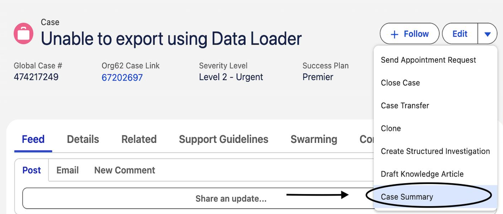
Illustration of where the Case Summary action appears in the case actions menu.Use AI assistance as a draft or summary aid, never as a substitute for technical review.
A form can be complete and still be unhelpful. The goal is to capture enough detail to reproduce the behavior, understand what has already been tested, and continue with the next logical action.
Describe the actual behavior, expected behavior, affected users, environment, and any precise error or identifier.
Record repeatable steps, the user or context used, and the conditions needed to see the problem.
Capture troubleshooting performed, evidence collected, comparisons made, and paths already eliminated.
State the next investigation step, customer dependency, handoff need, or resolution action clearly.
The subject and description identify the real problem rather than repeating the same vague sentence.
You know which users, environments, or records are affected.
The steps are precise enough for another engineer to try the behavior consistently.
Logs, error IDs, queries, screenshots, or other relevant findings are connected to the reasoning.
This tells the next engineer almost nothing about the actual behavior, scope, reproduction path, or troubleshooting history.
Describe the behavior, record the exact reproduction path, capture what was tested, and show why the next step makes sense.
No affected-user context, no exact error, no reproduction steps, and no record of what has already been checked.
Capture the affected user, exact action, exact error or ID, environment, reproduction steps, evidence reviewed, troubleshooting already performed, and the next action.
Closing a case means leaving a reliable record of the outcome and following the correct process for the situation. Unresponsive customers, duplicate cases, out-of-scope requests, and root-cause documentation require different closure decisions.
A useful closure leaves enough context to understand what happened, how the case ended, and which process justified the final action.
Document what solved the issue and why the resolution is complete.
Use the defined no-response process and preserve the follow-up history.
Preserve the original case and close the duplicate with a clear comment.
Validate the boundary and record the guidance provided to the customer.
No-response handling depends on the stage of the case. The general unresponsive-customer path uses a 10-day response window, while a case already in Solution Provided can automatically close after 5 business days without a customer reply.
When the investigation is complete and you choose Close Case, the closure process asks the engineer to classify why the issue occurred and document the result. These are fields on the support case, they are not separate cases.
Sub-Cause is not “Sub Case.” It is a more specific classification underneath Case Cause. Its available values depend on the Case Cause selected first.
The primary category that best describes why the issue occurred.
A more detailed classification under Case Cause. It behaves as a dependent picklist, so the options shown depend on the selected Case Cause.
The written summary of what the investigation discovered: the underlying cause, the resolution, and the reasoning that supports the conclusion.
A closure field that identifies the product capability related to the case. Confirm that the Product Feature associated with the case is correct before finalizing closure.
Keep the case history clear and follow the correct post-solution no-response process. If the workflow reaches the automatic-closure condition after 5 business days without a response, the case can close without treating it as an unresolved investigation.
A transfer should continue the investigation, not restart it. Before moving a case, validate scope, choose the correct destination, and carry enough context for the receiving team to understand the issue and the work already performed.
Do not move a case to another team or a higher level with no context. Confirm scope, perform the initial research, and make the handoff useful enough that the next team can continue immediately.
Use these case categorization fields to identify the relevant product area and issue topic. Accurate values support routing and give the receiving team immediate product context.
Use the relevant Knowledge guidance after initial research to determine whether the request belongs to the current team.
Explain the issue, reproduction steps, troubleshooting performed, and why the case is moving.
The transfer form brings together the categorization and routing context used during a handoff, including Product & Topic, language, shift, severity, transfer reason, and the handover option.
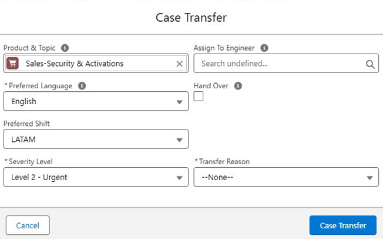
Understand the issue before deciding whether it belongs somewhere else.
Use the relevant support Knowledge article or guidebook to confirm team responsibility.
Choose the appropriate skill group, internal team, or partner path.
Transfer the investigation history, not only the case record.
The receiving team should be able to understand where the case is now, why it is moving, and what work has already happened.
Document where the case currently lives.
Identify the receiving destination clearly.
Briefly describe the problem and include the relevant error message.
List the steps if they are not already populated. If unknown, make the pending reproduction action explicit.
Record the investigation already completed, including relevant debug, network, or Splunk analysis.
Inform the receiving team why ownership is moving and what the expected next action is.
Validate the scope, document Product & Topic, preserve the issue and troubleshooting history, and explain why the receiving team is the correct owner.
Do not pretend the investigation belongs to the Salesforce team. Redirect appropriately and, when useful, provide the customer information about where partner support can be found.
Research first. An escalation without context forces the next level to repeat basic discovery and breaks the continuity the handoff is supposed to protect.
Review the internal references for case handling, scope boundaries, GHO handovers, and partner transfers.
Support work is not handled in the order it happens to appear. Queues organize incoming work, Omni-ChannelOmni-Channel evaluates incoming work and routes it to an appropriate available agent. Click to open the glossary. distributes it, and engineers continuously balance availability, capacity, skills, priority, and SLAService Level Agreement: the support timing commitment attached to a case. Click to open the glossary. risk.
Routing exists to reduce manual assignment, balance workload, and help customer work reach an engineer who is actually able to take it.
Organizes work before it is assigned to the right eligible agent or owner.
Evaluates routing criteria and distributes work automatically.
Communicates whether an agent is available, busy, away, at lunch, or offline.
Is the agent currently able to receive new work?
How much active work can the agent realistically handle?
Does the agent match the expertise required for the work item?
How urgently should this work be handled relative to other work?
Combines the configured routing criteria and delivers the work to the best eligible available agent.
After Omni-Channel and skills-based routing are enabled, administrators can configure skills and route work only to agents who meet the required combination.
Prioritize the cases with the greater SLA risk first. Severity, approaching milestones, aging, customer follow ups, and new lower risk work help shape that decision.
Handle the most urgent customer impact first.
Protect cases approaching a response or follow-up commitment.
Prevent work from sitting without meaningful progress.
Keep commitments and previously promised next steps moving.
Pick up new work while higher-risk obligations remain protected.
Review the routing configuration and determine why the work was directed to the current queue.
Check agent availability, capacity, routing requirements, and skill eligibility.
Confirm the configured business priority and whether another eligible agent was actually available.
Sarah is Available. Mike is Busy and already handling high-priority work. Jessica is at Lunch. Omni-Channel should not assign randomly: it evaluates who is eligible and available, then routes the new work to Sarah.
Open the References area for the internal Quip and Knowledge resources associated with queue handling and work routing.
Strong support is more than finding the technical answer. The customer should understand what is happening, what has been learned, who owns the next action, and when they can expect the next update.
A useful customer experience combines technical progress with professional, empathetic communication. Customers should never need to guess whether the case is moving or what happens next.
Be clear, professional, empathetic, and customer-centered.
Keep updates concise and actionable while documenting findings and next steps.
Communicate timelines, ownership, dependencies, and changes before the customer has to ask.
Use empathy, professionalism, de-escalation, and solution-oriented language.
Focus on business impact, risk, status, and mitigation rather than unnecessary technical detail.
State the investigation action or research completed.
Share the useful result, evidence, or current understanding.
Set the next action, owner, and expected timing.
An update can still be valuable before the root cause is known. Tell the customer what is being explored and when they should hear from you again.
Customers commonly escalate when they feel the case is not progressing. Strong communication reduces that uncertainty and helps internal teams coordinate earlier when risk increases.
Separate frustration about the experience from the technical symptom itself.
Do not tell the customer their issue is unimportant. Clarify the impact and respond professionally.
If a request is out of scope or a limitation applies, support the explanation with the appropriate documentation.
If dissatisfaction or business risk is increasing, align with the appropriate internal stakeholders instead of letting the situation drift.
Use the Out of Office message in OrgCS so teammates and customers know when you are unavailable, how long you will be away, and what they should do for urgent needs.
Turn on the Out of Office message so your availability status is clearly communicated.
Choose the start and end dates that define the exact period when you will be unavailable.
Write a short message that explains you are out, mentions limited email access if relevant, and tells urgent contacts where to go.
Save the configuration so the message becomes active in OrgCS during the selected time window.
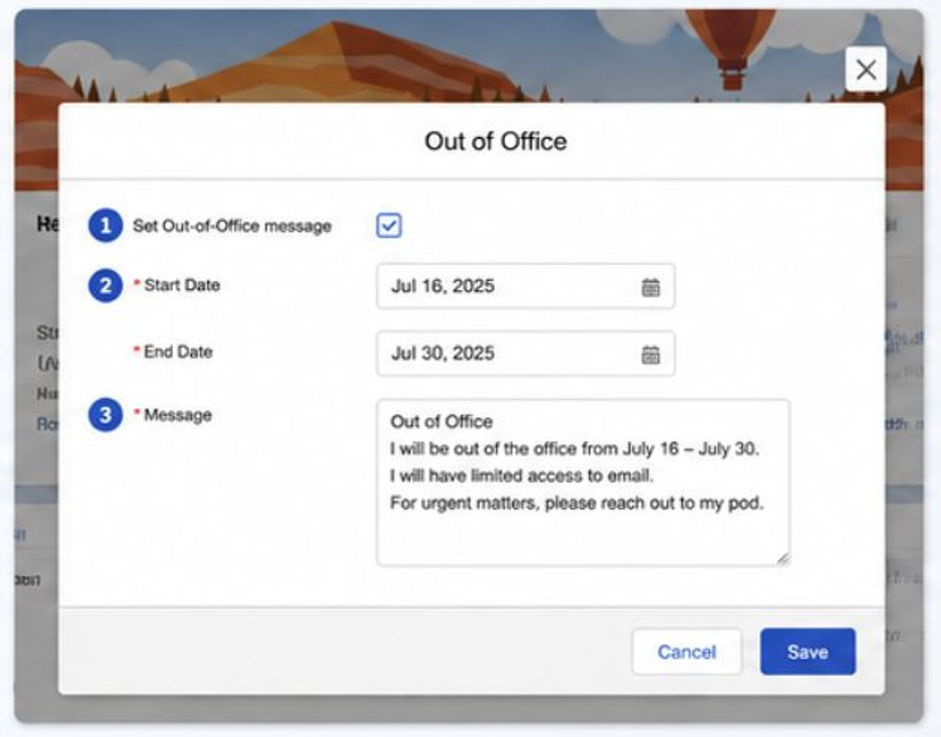
After setting the OrgCS message, reserve the same time in Google Calendar so teammates can quickly see your availability and plan around it.
Click Create (+) in Google Calendar and open a new event.
Give the event a clear title such as OOO or Out of Office.
Enter the start date, end date, and time range that match your unavailability.
Include a short note about your availability and return date when it is useful for internal visibility.
Save the event so your OOO block appears on your calendar and others can see the coverage window.
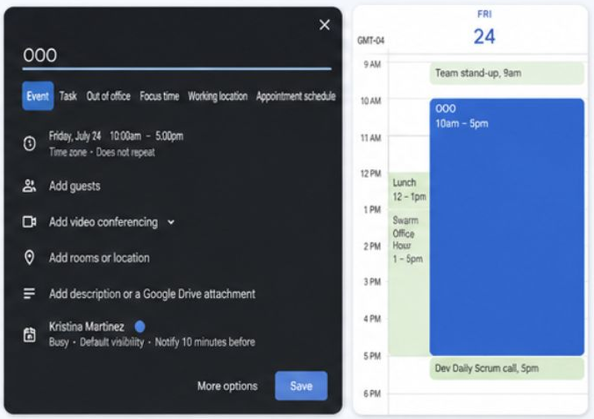
In addition to setting the OrgCS OOO message, notify customers that need coverage, reflect the time in Google Calendar, and update AssembledAssembled is the workforce management tool used for schedule and availability tracking. Click to open the glossary. so workforce visibility stays aligned.
Open the References area for the internal Slack document associated with Customer Experience and Art of Service.
Support performance is measured through a combination of workload, customer experience, resolution speed, service commitments, escalation behavior, workforce adherence, knowledge contribution, and continued role development.
Each measure answers a different operational question: how much work is moving, how customers feel, how long resolution takes, whether commitments are being met, and how often work requires another support layer.
Amount of work completed through cases solved, tasks completed, workload handled, and throughput.
Customer satisfaction with the support received, commonly measured through survey scores.
Average time required to completely resolve a case.
Measures whether target response and resolution commitments are being met.
Percentage of cases requiring another team, engineering, or a higher support tier.
These measures work as complementary signals. Operational quality includes both the work completed and the experience created while completing it.
Support expectations connect directly to career development, reactive support motions, collaboration, and accelerated onboarding.
Build product expertise, AI readiness, role proficiency, and career growth.
Improve support effectiveness through Agentforce, synchronous channels, workforce adherence, and knowledge efforts.
Represent the voice of customers and collaborate to improve product serviceability.
Build foundational knowledge, certifications, and confidence to support customers independently.
Overall 4.50 · Premier 4.55 · Standard 4.45 · Signature 4.70
6 days
> 85%
2 Knowledge Articles per quarter · 1 release-readiness video/content item per release
These values are a period specific FY27 snapshot. Verify current team targets before using them operationally.
The goal is not instant mastery. The path is to become productive through product foundations, certifications, investigation habits, and progressively independent case ownership.
Learn the products, support processes, investigation tools, and communication model.
Complete the first required role certifications and maintain role proficiency.
Manage customer support cases while applying consistent investigation and communication habits.
Deepen product expertise, AI readiness, knowledge contribution, and cross-team collaboration.
25 questions covering the complete module: role fundamentals, case lifecycle, severity, documentation, closure, transfers, queue management, customer experience, and success metrics.
Build the platform foundation first: Customer 360, architecture, environments, licensing, data model, navigation and configuration.
Salesforce is a platform of connected applications and services. Customer 360Customer 360 connects Salesforce products and customer context across business functions. Click to open the glossary. is the mental model that helps you see those products as one ecosystem instead of isolated tools.
Sales, Service, Experience, Commerce and other products can participate in the same customer lifecycle. The final implementation varies by company, industry, and business process.
Salesforce provides the underlying platform services.
Core and specialized products support different business functions.
Related data creates continuity across the journey.
Organizations extend the platform with their own apps and processes.
Which cloud or product experience is the customer working in when the behavior occurs?
Which accounts, contacts, cases, opportunities, or other records connect the workflow?
Determine whether the issue belongs to one product configuration or to the interaction between products and shared data.
Customer 360 is useful because customer problems often cross product boundaries. Start by understanding the complete journey before narrowing to a component.
Do not begin by assuming Service Cloud is broken. Identify which record or relationship should carry the context, confirm where the data originates, and determine whether the issue is in the source data, the connection between records, or the consuming experience.
Architecture gives a Success Engineer the context to decide whether a behavior is customer-specific, org-specific, environment-specific, or part of a broader platform condition.
A single Salesforce software and infrastructure model serves multiple customers while each tenant remains logically isolated.
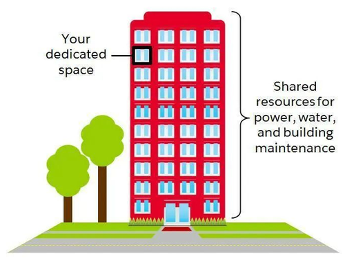
Customer data isolated
Customer data isolated
Customer data isolated
A logical infrastructure cluster serving a set of customer orgs. POD context helps support teams understand infrastructure scope and release context.
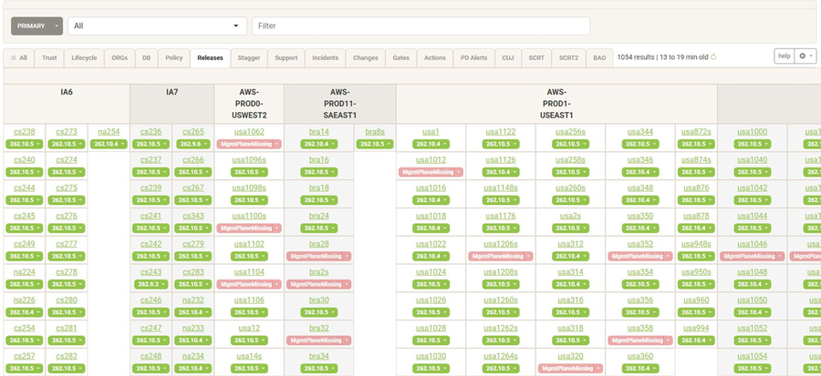
Administrative support console for customer org investigation. BT environments are used for Production context, while SBT environments are used for Sandbox context.
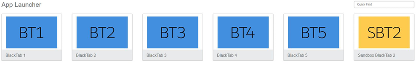
Provision preconfigured orgs for development and specialized testing use cases.
?Slack Channel: #orgfarm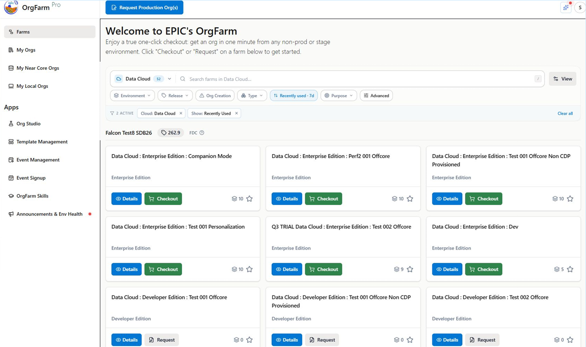
Demo and test orgs used by support engineers to reproduce customer behavior.
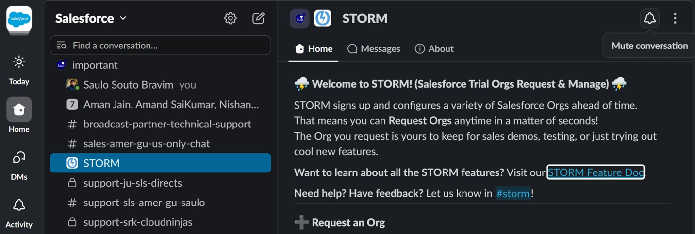
Public platform health view for incidents, maintenance, and service transparency.
Confirm the exact org and environment where the behavior occurs.
Understand the infrastructure cluster serving the org.
Check Salesforce Trust for a broader incident or maintenance condition.
Use another environment or test org to determine whether the behavior reproduces elsewhere.
Capture the org and environment first. Check whether the behavior is isolated, review platform-health context, identify the POD when relevant, and compare against another org or environment before deciding that the issue is a broader platform defect.
Open BlackTab, OrgFarm, and internal Slack resources connected to the tools used in this topic.
Production runs the real business. SandboxesIsolated Salesforce environments used for development, testing, training, and safe experimentation. Click to open the glossary. give teams a safer place to build, reproduce, and validate behavior.
Real customers, real revenue, live automations, dashboards, and daily business operations.
An isolated copy or test environment used for development, testing, training, and experimentation.
Metadata-only and lightweight. Useful for individual development and testing.
Similar to Developer with more storage capacity.
Metadata plus a subset of production data for more realistic testing.
Complete metadata plus production data for the highest fidelity sandbox copy.
Production, Developer, Developer Pro, Partial Copy, or Full?
If Production changes are missing in the sandbox, verify the last refresh timestamp.
Different data volume or stale configuration can explain inconsistent behavior.
Sandbox type, quantity, and refresh availability can depend on edition and licensing.
Do not make configuration changes in a customer's live Production org while investigating. Observe or reproduce the issue, then move testing to an appropriate sandbox or test org.
Before treating it as a platform defect, confirm the sandbox type and the last refresh. Then compare metadata and data differences between Production and the sandbox.
Use the Salesforce Sandbox Guide as a companion resource for sandbox types, use cases, and environment planning.
What a customer can use may depend on the Salesforce edition, the user's primary license, additional license layers, and organization-level entitlements.
Sets the broad product capability, limits, and sandbox entitlement available to the organization.
Baseline capabilities required for the user.
Adds a specific feature or tool.
Extends the user's available capabilities.
Before investigating deeply, verify whether the customer's edition and license combination actually includes the expected capability.
Feature availability and platform limits can vary by edition.
Available sandbox types, quantities, and refresh intervals can depend on edition/licensing.
Some organization capabilities are consumed or purchased based on usage rather than a user seat.
One user's capability may differ from another because of license assignments.
What feature is the customer trying to use?
Does the organization edition include the feature?
Does the affected user have the required license layers?
Only after access is valid should you assume a configuration issue.
Compare the users' primary licenses, feature licenses, and permission set licenses before treating the difference as a platform defect. Then review configuration and permissions if licensing is correct.
Use Salesforce Help to compare editions and confirm which organization capabilities are expected to be available.
Successful troubleshooting starts by separating metadataThe structural blueprint of the org: objects, fields, layouts, rules, and other configuration. Click to open the glossary. from the data stored inside those structures.
Think of an object as the category of information being stored. Examples include Account for companies, Contact for people, Case for support issues, and Project__c for a customer-specific project structure.
Think of a field as one attribute stored on that object. Examples include Account Name, Case Status, Opportunity Amount, or a custom field such as Budget__c.
Each card represents an object that can contain many records. The labels below distinguish standard objects provided by Salesforce from a customer-defined custom object.
Salesforce provides standard objectsObjects store records for a business concept. Standard examples include Account, Contact, Case, Lead, and Opportunity. Click to open the glossary. such as Account, Contact, Case, Lead, Opportunity, Product, Quote, Task, and User. Customers can create custom objects and fieldsFields store attributes on an object. Examples include Status, Amount, Start Date, or a custom field such as Budget__c. Click to open the glossary. for business-specific needs. Their APIApplication Programming Interface, or API, is a defined way for software or integrations to interact with Salesforce programmatically. In this context, an API name is the technical name used to reference an object or field. Click to open the glossary. names commonly use the __c suffix.
A custom object can combine standard fields such as Name and OwnerId with custom fields created for the customer's business process.
| Field Label | Field API Name | Data Type |
|---|---|---|
| Project Name | Name | Text |
| Description | Description__c | Long Text Area |
| Start Date | Start_Date__c | Date |
| Status | Status__c | Picklist |
| Budget | Budget__c | Currency |
| Owner | OwnerId | Lookup(User) |
| Account | Account__c | Lookup(Account) |
Creating the field is only the first step. It also needs to appear in the right user experience and then participate in the processes that depend on it.
Choose the label, API name, data type, and field-level options.
Place the field on the appropriate page layout or Lightning record experience.
Users can view or edit the field when visibility, permissions, and page configuration allow it.
The field can support reports, filters, formulas, validation, Flow, and other automation.
Hover or select a type to see what it stores and a practical example.
Inspect configuration: object, field, layout, record type, validation rule, automation, or visibility logic.
Inspect the specific record values, related records, imports, updates, and the process that populated the data.
First confirm whether the field itself exists and is part of the expected configuration. If the structure is correct, move to the record data and related process that should populate the value.
Fast investigation depends on knowing how to move through apps, records, search, and administrative entry points without losing the customer's path.
Configuration determines how Salesforce presents business processes to users. Setup, Object Manager, relationships, record types, layouts, picklists, and dynamic visibility are common starting points for investigation.
The administrative control center for platform-wide configuration. Object Manager and Schema Builder are both reached from the Setup experience.
Inspect and configure a specific standard or custom object, including fields, relationships, record types, layouts, and related settings.
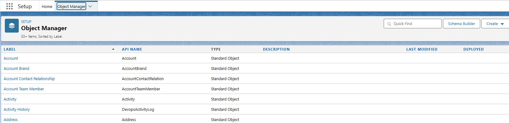
Visualize objects, fields, and relationships when the data model is easier to understand as a diagram.
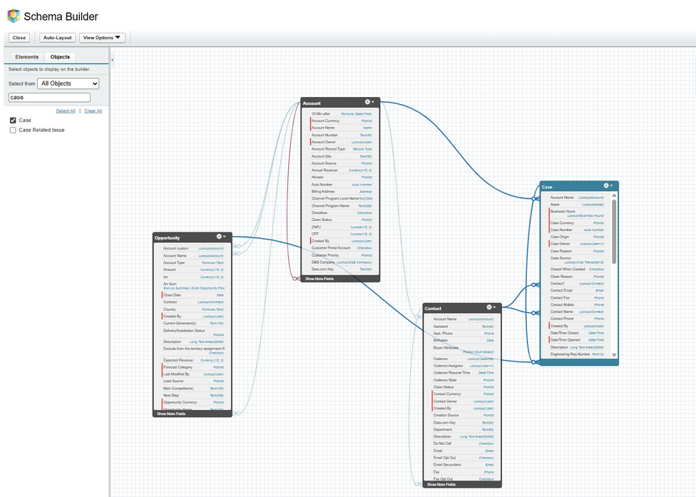
The controlling field filters the values available in the dependent field.
Different teams can use the same object while receiving different business-process experiences.
Assignments combine user context and record type to determine the layout a user sees.
Visibility criteria reduce page clutter and surface only relevant fields and actions.
Record Types let the same object represent different processes by connecting users to the appropriate business process, picklist values, and page experience.
Define the distinct business processes the object needs to support, such as New Business and Renewal.
Associate each Record Type with the appropriate page layout and available picklist values.
Make the relevant Record Types available to the users or teams that need those business processes.
When creating or editing a record, the user works with the Record Type and experience available to them.
The controlling field provides the context. Salesforce then limits the dependent field to the values mapped to that controlling selection.
Create the field that drives the selection, for example Country.
Create the field whose choices will be filtered, for example State / Province.
In Field Dependencies, select which field controls the other field.
Choose which dependent values are valid for each controlling value.
Place the fields on the appropriate page layout or record experience and test the behavior.
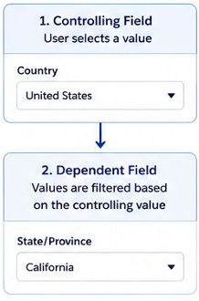
?Only valid values are shown.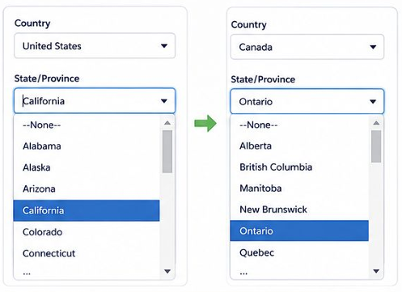
Start in Object Manager for the object where the issue occurs.
Confirm the field and its type.
Verify the user's record type and assigned page layout.
Check whether criteria hide the field or action.
Check the controlling/dependent field relationship and value mapping before treating the missing option as a defect.
Confirm the object, then compare the user's record type and page-layout assignment. If those are correct, check Dynamic Forms / Actions and remember that permissions can be another visibility layer covered later in the course.
Use the Trailhead module to reinforce navigation through Setup and Object Manager.
25 questions covering Customer 360, architecture, environments, editions and licenses, data model, navigation, and configuration.
Follow the acquisition journey from the first expression of interest to a managed sales opportunity, then connect that journey to the Experience Cloud entry points customers use.
Sales Cloud organizes the path from prospect interest to revenue. A Success Engineer needs the business lifecycle because the fastest investigation starts by identifying the first stage where expected records, ownership, or automation stopped matching the intended process.
The process begins with a prospect, moves through qualification and conversion, and then continues through active deal management, onboarding, support, retention, and growth.
Prospect information enters Salesforce.
Determine whether the prospect is worth pursuing.
Create established customer/sales records.
Move the Opportunity through the sales process.
Onboarding, support, renewals, and additional business.
Prospect before conversion.
Customer organization or business relationship hub.
Individual person associated with an Account.
Active sales deal and pipeline record.
Pricing proposal for products/services.
Do not begin with a random setup page. Start with the customer's business outcome and walk backward through the expected records and automation.
Lead capture, qualification, conversion, or Opportunity management?
Which Account, Contact, Opportunity, owner, or status was expected?
Assignment, auto-response, validation, duplicate logic, Flow, Apex, or approval?
Break the statement into checkpoints. Was a Lead created? Was it assigned correctly? Was it converted? Which records should have been created? Did the Opportunity progress as expected? The first failed checkpoint defines the next investigation.
These records define who the customer is. Before troubleshooting relationships or record creation, confirm whether the implementation follows a B2BBusiness to Business. A company sells products or services to another organization. Click to open the glossary. model or a B2CBusiness to Consumer. A company sells products or services directly to individual consumers. Click to open the glossary. model, then confirm what Salesforce record structure the customer expects.
An Account acts as the relationship hub; Contacts represent the people associated with that organization.
For individual-consumer scenarios, Salesforce can represent the customer in a single Person Account record rather than a separate business Account + Contact structure.
Organizations and customer companies are visible as Account records.
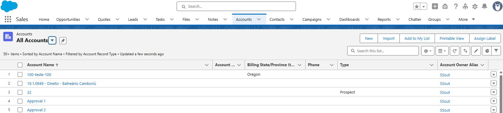
Individual people associated with organizations appear as Contact records.
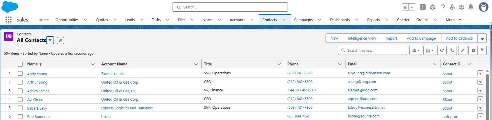
When Person Accounts are enabled, an individual customer can be represented in a single Account based record.
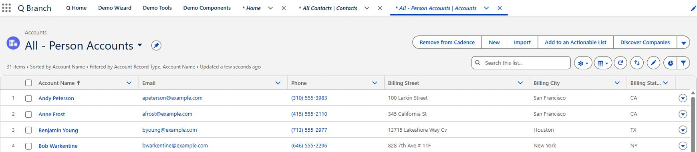
People and communication context.
Active and historical sales deals.
Support interactions and customer issues.
Customer-specific business relationships.
Is the customer modeled as an organization with people, or as an individual consumer?
Is the Contact missing its Account, or is another related record not connected as expected?
Trace how the record entered the org and whether the expected related records should have been created.
Confirm whether Person Accounts are part of the customer's B2C model before concluding that a Contact failed to create. The expected record structure depends on how the org models customers.
A LeadAn unqualified potential customer or prospect. Click to open the glossary. starts before the established customer relationship. The lifecycle helps you identify where a prospect stopped moving toward conversion.
BANT provides a structured set of questions a business can use to determine whether a prospect is a strong fit.
Can the prospect realistically purchase?
Is the right decision-maker involved?
Does the prospect have a problem the product can address?
Is there a realistic purchasing timeframe?
Was capture successful?
Did qualification/nurturing progress?
Were the expected Account, Contact, and Opportunity records produced?
Ask what stage the Lead reached, what should have happened next, and which automation or record should prove that transition.
Use this Salesforce resource to reinforce the lead management process and how prospects move through the sales journey.
Web-to-LeadA Salesforce-generated HTML form that creates Lead records from website submissions. Click to open the glossary. automates one of the first steps in the sales process by moving submitted website information into Salesforce.
Enters information in the form.
The standard setup-generated form captures selected fields.
Submission reaches Salesforce and creates the Lead record.
Assignment and auto-response behavior can occur after creation.
Open Setup, search for Web-to-Lead, and navigate to the configuration page.
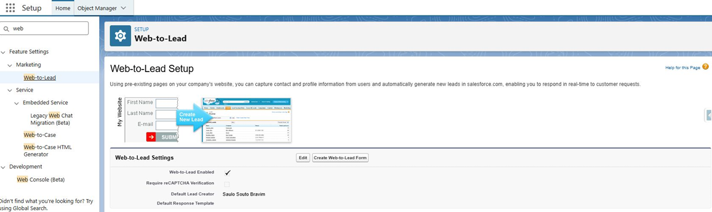
Select the fields to include, define the return URL, and generate the form from Salesforce.
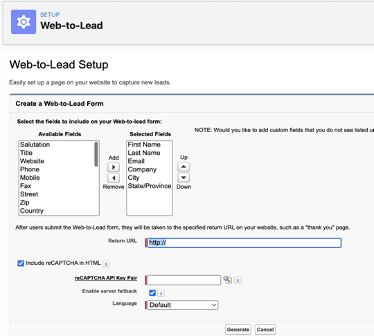
Salesforce produces the HTML snippet that can be placed on the website for Lead capture.
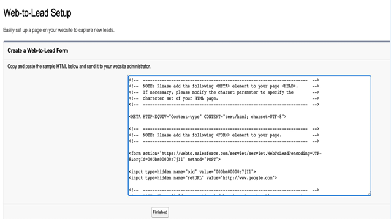
Use the standard generated HTML as the comparison point. Record Type is the permitted modification in the standard support scope guidance.
Custom JavaScript, altered form structure, third party frameworks, and custom CSS can move the issue outside the standard support troubleshooting scope.
Generated form behavior, field mapping, validation impact, duplicate rules, Lead creation, Assignment Rules, and Auto-Response Rules are part of the Salesforce path.
Custom scripts, external site builders, third-party wrappers, and modified HTML/CSS structures should be isolated from the Salesforce baseline before escalating the issue as a platform defect.
Useful for reducing automated spam. Because it is a Google-managed service, isolate whether reCAPTCHA is blocking legitimate submissions rather than treating every failure as a Salesforce defect.
Confirm the customer is using the standard form and determine whether submission reaches Salesforce.
Review reCAPTCHA usage and identify the source before assuming a Salesforce-side block.
Move to Lead Assignment Rules once the Lead is created successfully.
Inspect the active Auto-Response RuleA rule that sends automatic email responses based on record attributes. Click to open the glossary., criteria, template, and email delivery evidence.
Check org and limit context in the support tooling rather than guessing from the website symptom.
Reproduce with the standard setup-generated form. If the standard form works, the evidence points away from the Salesforce baseline and toward the customization layer. If the standard form also fails, continue with Salesforce configuration, validation, duplicate logic, reCAPTCHA isolation, and limits.
Open the linked resources to review the standard setup path, support boundaries, and troubleshooting material for Web-to-Lead.
Lead Assignment RulesOrdered criteria used to assign Leads to users or queues. Click to open the glossary. determine ownership after a Lead is created. The rule order matters because Salesforce uses the first matching entry.
Multiple rules can exist, but the active rule evaluates its entries from top to bottom.
Assign to LATAM Queue
MATCH?Assign to Partner Sales
MATCH?Assign according to remaining business logic
MATCH?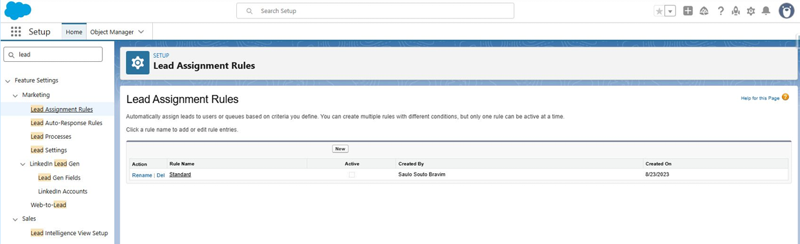
Compare the Lead's actual field values with the first entry criteria.
Assign the Lead and stop evaluating lower entries.
Continue to the next entry in order.
Confirm the intended rule is active.
Check whether a broader entry matches before the expected entry.
Compare the saved data against the rule criteria.
Confirm the process that created the Lead actually invoked the assignment rule.
Confirm the active rule, then inspect the entries in order and compare them with the Lead's actual Country, Lead Source, and other criteria. A broader earlier match can explain why the expected later entry never ran.
Lead ConversionThe process that converts a qualified Lead into Account and Contact records, with Opportunity optional depending on the scenario. Click to open the glossary. moves a qualified prospect into the established customer/sales record structure.
The source record that is converted.
Organization or customer relationship.
Individual associated with the Account.
Optional active deal record.
Custom fields do not automatically carry into Account, Contact, or Opportunity. The destination custom field must exist and the mapping must be configured.
Create the corresponding custom field on the target object before mapping.
Use compatible field types. Some supported exceptions exist, but matching data types is the safe default.
The Lead becomes read-only rather than being deleted, preserving historical tracking.
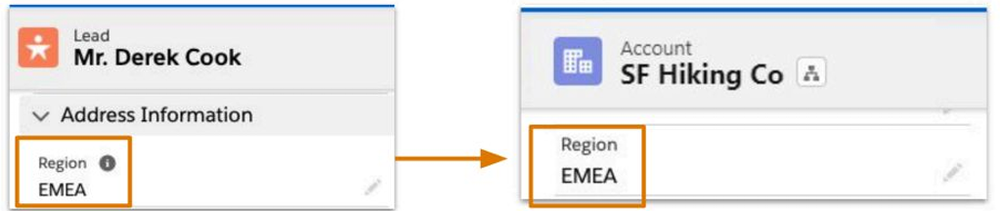
Identify which destination object or rule is named.
Confirm the target Account, Contact, or Opportunity has the data it requires.
Determine whether destination-record validation blocks the save.
Verify custom values are mapped to valid destination fields.
Check whether duplicate logic changes record creation or association.
If the error is not obvious, use Debug Logs to identify Flow or Apex failures.
Start from the error message and target object. Verify the required Account field, whether a corresponding Lead field exists, and whether mapping or the validation requirement explains the failure. If automation throws the error instead, capture Debug Logs.
Lead issues are usually process issues. The goal is to follow the Lead through creation, assignment, response, qualification, conversion, duplicate logic, and automation until the first failing checkpoint is clear.
Did the Lead enter Salesforce?
Did ownership route as expected?
Was the acknowledgement email sent?
Did validation or duplicate logic intervene?
Did the target records and mapped fields behave correctly?
Defines which fields Salesforce compares and how strict the matching logic should be, for example exact, fuzzy, or configured criteria.
Determines whether the user is allowed to continue, receives a warning, or is blocked after a potential duplicate is detected.
Capture the full error before changing configuration.
Does the behavior affect every user or record, or only a subset?
Compare saved values against rule criteria and expected mappings.
Check active assignment, response, validation, duplicate, Flow, and Apex behavior.
Use BlackTab for org/limit context, documentation for expected behavior, and logs/queries when runtime evidence is needed.
An OpportunityAn active potential sale or business deal. Click to open the glossary. represents an active deal. Stages show sales progress, Forecast Categories help leadership estimate revenue, and Quotes capture proposed products and pricing.
Stages represent sales-process progress. Closed Won means the sale succeeded; Closed Lost ends the deal without a sale.
Sales leadership uses these categories to interpret confidence and expected revenue.
Current value and expected next state.
Business process and available stage values.
Fields needed before the deal can progress.
Automation that can block or change behavior.
Pricing and line-item relationships.
User ability to update the record.
A Quote is created from an Opportunity and its products. An Opportunity can have multiple Quotes, but only one Quote can be synced at a time.
Products / quantities
Quote line items
Open the linked resources to review Opportunity stage progression and Forecast Categories in more detail.
An Approval ProcessAn automated review workflow that routes a qualifying record to one or more approvers. Click to open the glossary. automates business review when a record must be approved before it can proceed.
Opportunity, Quote, Case, Knowledge Article, or another configured record enters the request.
Salesforce checks whether the record qualifies for the process.
Lock record, update fields, notify, or create tasks.
Approve or reject; additional approval steps may follow.
Continue through later approvers or run final approval actions.
Exit the approval path and run configured rejection actions.
A sales rep requests a discount above company policy and manager approval is required.
A business record requires sign-off before it can continue.
Knowledge publishing is another example where designated approvers verify accuracy before publication.
Did the record qualify for the process at submission time?
Was the request routed to the expected person or group?
Did the record move through every expected approval step?
Use history to identify exactly where the workflow stopped or changed.
Check record locking, field updates, notifications, and final actions.
Flow or Apex can interact with the same record and alter the expected behavior.
Verify that the Opportunity met entry criteria, confirm the configured approver and step routing, review Approval History, and then inspect any Flow or Apex that could have altered the record or routing.
Experience CloudA platform for branded customer, partner, employee, and public digital experiences connected to Salesforce. Click to open the glossary. extends Salesforce beyond the internal UI and can act as the front door where prospects and customers interact with Salesforce data and processes.
Branded experiences connected to Salesforce data.
Cases, status, uploads, replies, and customer self-service.
Display business data such as inventory, properties, or classes.
Browse products, orders, subscriptions, and purchase history.
Selected Leads, Opportunities, documents, and support information.
Internal HR resources, onboarding guides, and announcements.
Campaign, launch, webinar, event, or lead-capture experiences.
Knowledge, FAQs, known issues, and case submission options before a customer needs direct support.
A prospect fills out a form, registers for an event, requests a demo, or interacts with a branded page.
The information enters Salesforce and becomes part of the sales or service process.
Page, component, branding, or site setup.
User license, profile/permissions, and whether the user should have access.
Whether the external user can see the underlying Salesforce records.
Login and identity path into the experience.
Whether the underlying record/data actually exists and is correct.
The specific form, case action, Lead capture, component, or business process presented on the site.
The successful login tells you authentication is working. Move next to user access, sharing, and the underlying Opportunity data before treating the page component itself as the root cause.
25 questions covering the complete customer acquisition journey: customer records, Lead lifecycle, Web-to-Lead, assignment, conversion, troubleshooting, Opportunities, approvals, and Experience Cloud.
Understand the connected Service Cloud ecosystem where cases, routing, messaging, email, knowledge and agent productivity work together.
Service Cloud organizes how support work enters Salesforce, gets routed, is investigated, and moves toward resolution. A Success Engineer needs this ecosystem view to quickly identify whether the issue is with intake, workspace, routing, automation, or communication.
Customers do not experience one isolated feature. They experience the full path: creating a case, getting routed, working with an agent, receiving updates, and closing with confidence.
Cases enter through web, email, UI, API, or other channels.
Ownership, queue placement, and severity are established.
Agents investigate in the case record and related console tools.
Knowledge, swarmingA collaborative support approach where people with relevant expertise work together on the same issue instead of relying only on sequential handoffs. Click to open the glossary., transfers, and escalation keep work moving.
The outcome is communicated, confirmed, and documented.
The central record for issue ownership, status, history, and resolution.
The workspace where agents manage tabs, subtabs, and related support context.
Shared ownership used to hold new or routed work before an individual takes it.
Real-time routing that sends work to available agents based on configured logic.
Reusable guidance that helps agents and customers resolve recurring questions faster.
Support commitment structure that can define what the customer is entitled to receive.
The fastest diagnosis comes from asking where the support journey first stopped matching expectation: case intake, ownership, routing, workspace, or resolution handling.
Confirm the case exists, key fields populated, and the expected channel or origin is visible.
Validate queue ownership, assignment logic, and whether routing sent work to the intended team.
Check workspace access, visibility, page layout, utilities, related records, and case history.
Break the complaint into checkpoints. Was the CaseThe central support record used to track a customer issue from intake through resolution. Click to open the glossary. created? Who owns it? Did it land in a QueueA holding and ownership structure that groups work for users or teams. Click to open the glossary.? Should Omni-ChannelSalesforce routing capability that delivers work to an appropriate available agent. Click to open the glossary. have pushed it? Can agents see it in the Service ConsoleA tab-based agent workspace designed for multi-record support work. Click to open the glossary.? The first failed checkpoint defines the investigation.
The Service Console is the multi-record workspace where agents spend much of their time. A Success Engineer should understand its anatomy so they can separate data issues from UI, access, and productivity issues.
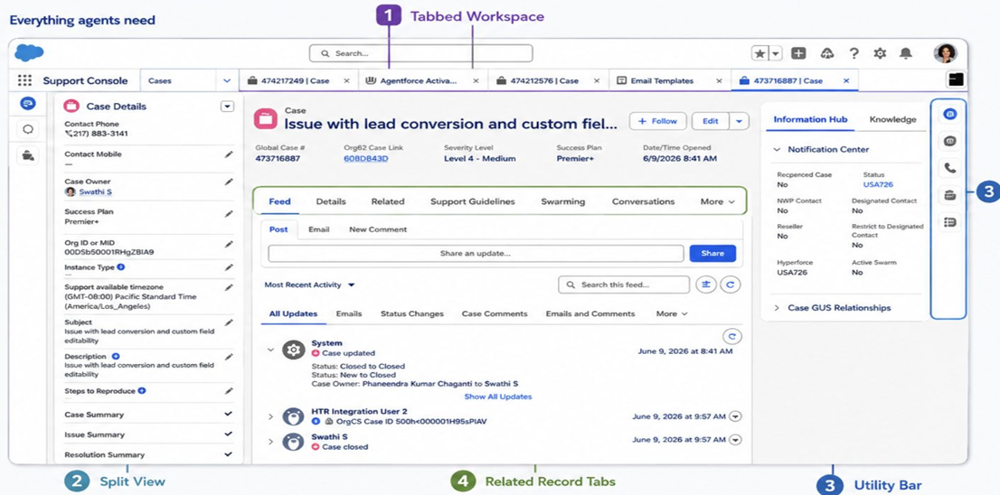
Automate repetitive tasks with one click.
Use pre-written responses quickly.
Send and manage customer emails.
Search and share help articles.
Validate app visibility, profile or permission access, and whether the user is in the expected app.
Check page layout, Lightning record page, components, and utilities that should appear.
Look at missing tabs, utility tools, pinned tabs, or console-specific features expected by the team.
First confirm the issue is in the correct app and page context. Then validate whether the missing item belongs to the page layout, Lightning record page, utility bar, or profile/permission configuration. This prevents mixing data problems with console setup problems.
Case management is more than changing a status. It is the discipline of keeping the case record accurate, actionable, and readable while the Case FeedA timeline-style record feed that shows actions, updates, emails, and collaboration tied to a case. Click to open the glossary. preserves the work narrative.
Fields drive reporting, routing, and automation. The feed captures the human story: updates, emails, actions taken, and collaboration that explain how the case progressed.
Status, priority, origin, owner, product, and other structured data.
Updates, responses, timeline events, and work notes visible in the case history.
Emails, tasks, and follow-up activity that keep the customer path moving.
The shared operational memory for anyone who later touches the case.
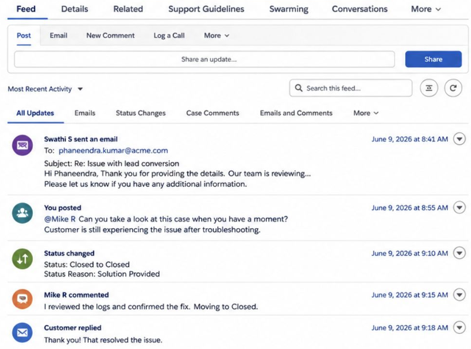
This view shows the running activity on a case, including customer communication, internal collaboration, and status movement in one timeline.
Keep the team aligned with real-time updates and @mentions.
All customer communications are captured and tracked automatically.
Share internal notes and insights with your team.
Automatic updates keep everyone informed of case progress.
Everything related to the case is logged in one place for full visibility and context.
Validate that key case fields represent reality and not stale values from earlier in the lifecycle.
Check whether emails, timeline actions, and meaningful updates are visible where future owners need them.
If not, the issue is not just a data problem, it is a case management quality problem.
The record may be structurally correct but operationally incomplete. Check the Case FeedA timeline-style record feed that shows actions, updates, emails, and collaboration tied to a case. Click to open the glossary. or activity trail to confirm whether the customer communication and follow-up history were actually captured.
Parent casesA higher-level case used to group and monitor related child cases. Click to open the glossary. and child casesA related case linked under a parent case so work can be separated while remaining connected. Click to open the glossary. help teams manage broad incidents or related issues without forcing unrelated owners and updates into one overloaded record.
Tracks the shared story, broader communication, and overall coordination.
One customer or one subproblem with its own investigation.
Separate owner or workstream, still tied to the common issue.
Another impacted unit that still needs distinct tracking and updates.
Multiple related issues need shared coordination but still require separate owners, customers, or timelines.
The issue is truly one case and splitting it would create unnecessary tracking overhead.
A transfer moves ownership. Parent-child preserves separate case records while connecting them.
This field helps confirm the relationship from the child record side and makes it easier to validate whether the correct parent case is linked.
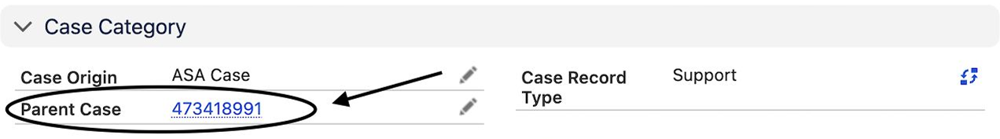
Confirm the child records actually belong to the same broader issue and are not unrelated duplicates.
The parent should explain the common issue, major updates, and coordinated status, not just exist as a shell.
Each child should retain the specific customer or subproblem details needed for separate resolution.
Create a coordinating parent caseA higher-level case used to group and monitor related child cases. Click to open the glossary. for the shared issue and use child casesA related case linked under a parent case so work can be separated while remaining connected. Click to open the glossary. for each impacted customer. This keeps one common coordination thread without losing customer-specific ownership.
Open the supporting Knowledge resource for parent-child case handling and relationship context.
Support issues can arrive through multiple channels, but customers still expect a clean first-touch experience. This topic focuses on how cases get created and what early automation should happen immediately after intake.
Case is created by channel, user, or system.
Core fields such as origin, status, or record type are set.
Ownership or queue placement is determined.
Auto-response or first-touch communication can run.
Omni or downstream work can continue from a clean intake.
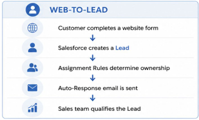
Useful as a comparison point: a website form creates a Lead, Assignment Rules set ownership, Auto-Response can send a confirmation, and the sales team qualifies the new record.
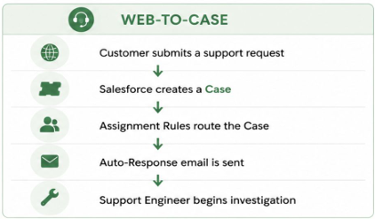
For support, the website request creates a Case, Assignment Rules route it, Auto-Response can acknowledge receipt, and the support engineer begins the investigation.
Customer-submitted web form creates the case directly in Salesforce.
Inbound email creates or updates support records.
Users create the case directly from the app or console.
External systems create or sync support work programmatically.
Typical first-touch logic includes defaults, record type logic, queue assignment, auto-response, and any lightweight flow that prepares the case for the next team.
Verify whether a record exists and whether the expected origin or source is visible.
Check default values, assignment behavior, auto-response, or flow-triggered updates.
Even when creation works, missing defaults or assignment can break everything that follows.
First confirm a case is being created. Then check whether the expected auto-response logic is active, whether entry criteria were met, and whether the customer email or channel data was available for the automation to use.
Omni-Channel distributes support work to appropriate available agents, while queues hold work for groups until an eligible user accepts or receives it. Routing decisions can depend on presence, availability, capacity, workload, skills, and business priority.
Work is created in Salesforce and enters the support flow.
Omni-Channel finds the best available resource.
Work is delivered instantly to the right agent when the configured routing requirements are met.
Happy customer, efficient team.
In Setup, open Omni-Channel Settings, enable Omni-Channel, and then enable Skills-Based and Direct-to-Agent Routing. After that, configure the skills, skill requirements, and routing logic used by the work items.
Confirm the base Omni-Channel setting is enabled.
Turn on Skills-Based and Direct-to-Agent Routing from Omni-Channel Settings.
Create the skills, define what work requires them, and connect those requirements to the routing configuration.
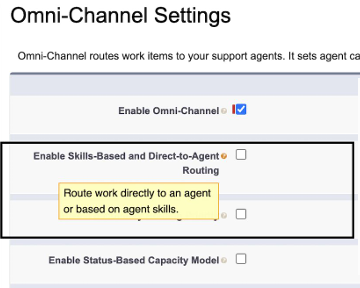
Setup → Omni-Channel SettingsA queue groups work for a team until an eligible user accepts or is assigned the item. Queue membership is part of the eligibility story, but a queue alone does not explain every Omni-Channel decision.
Is the agent in a status that allows this work?
Does the agent have room for more work?
Does skills-based routing require capabilities the agent has?
Does the routing model prioritize one work item over another?
Presence statuses help Omni-Channel understand whether the agent should receive new work.
Confirm the record or messaging session is actually eligible for routing.
Validate the configured queue, routing model, priority, and any required skills.
Verify queue membership, presence status, capacity, workload, skills, and whether the agent is eligible for that work.
Do not assume the queue is broken. Confirm the work item is routeable, then validate the routing configuration and finally the agent side: presence, capacity, skills, workload, queue membership, and eligibility.
Case Escalation Rules are time-based automations that monitor qualifying cases and take action after a configured amount of time. Their behavior depends on criteria, the active rule, the escalation clock, and the business hours that apply.
Assignment Rules determine initial ownership using case criteria such as origin, product, priority, language, or region.
Escalation Rules monitor cases that meet defined criteria and take configured action after enough qualifying time has elapsed.
Continuously checks cases based on the active rule and its criteria.
Looks for cases that meet the configured escalation criteria.
Reassigns, updates fields, or notifies the right people after qualifying time passes.
Helps cases receive attention and continue toward resolution instead of sitting unnoticed.
Compare the actual case values with the escalation entry criteria.
Establish the start point and whether the case remained qualifying during the relevant period.
Confirm whether enough qualifying time actually passed before expecting the escalation action.
Validate the active rule and criteria, determine when the escalation clock started, identify the business hours in use, and calculate whether the configured qualifying time actually elapsed.
Digital Engagement brings messaging channels such as chat, SMS, WhatsApp, and social messaging into the Service Cloud support experience. The investigation must follow the conversation across channel entry, automation, routing, agent assignment, and case linkage.
Real-time chat on your website.
Text messaging for quick support.
Popular messaging channel around the world.
Reach iOS users where they already communicate.
Engage on a social messaging platform.
Connect on Instagram messaging.
Is the customer message entering Salesforce from the expected digital channel?
Did a bot or automated step behave as expected before routing?
Did Omni-Channel send the messaging work to an eligible agent?
Was context preserved while the agent handled the interaction?
Could the agent work the conversation in the expected workspace?
Was the session associated with the correct support case when needed?
A digital-engagement failure can occur at channel entry, bot/automation, routing, messaging-session creation, agent assignment, or case linkage. Confirm each layer in order before changing configuration.
Confirm the channel interaction and automation completed, then inspect the Omni-Channel routing path, agent eligibility, and whether a messaging session was created and routed correctly.
Email-to-Case turns inbound customer email into support cases, while telephony/CTI or voice integrations connect call interactions to Service Cloud workflows. Troubleshooting must separate the communication channel from the Salesforce case behavior that follows.
Email-to-Case depends on message delivery, routing/configuration, case creation, and ownership behavior. Each checkpoint can succeed or fail independently.
CTI or voice integrations connect call interactions to Salesforce support workflows and can participate in Omni-Channel and console experiences depending on customer configuration.
Check message arrival, routing, case creation, ownership, and outbound delivery separately. Email logs can later help verify whether Salesforce sent a message.
Identify the telephony/CTI or voice integration in use, then determine where routing and console behavior belong in that architecture.
For email, verify whether the message arrived. For voice, verify whether the integration received the interaction.
Check case creation, case linkage, ownership, and routing behavior.
For outbound email, use the available delivery evidence such as email logs when appropriate.
First confirm whether the inbound message reached the configured email path. Then verify routing/configuration, case creation, and ownership. Do not start with outbound email logs because they answer a different question.
Service productivity combines Knowledge, EntitlementsSupport eligibility and service commitments that define what level of support a customer should receive. Click to open the glossary., MilestonesTime-based service checkpoints used to track whether support commitments are met. Click to open the glossary., surveys, and AI-assisted capabilities to help agents resolve cases consistently and efficiently. Each capability depends on enablement, access, data, and configuration.
Trusted troubleshooting guidance, FAQs, configuration information, and reusable customer-facing help.
Define what level of support a customer should receive.
Measure whether service commitments are being delivered on time.
Capture customer feedback on the support experience.
Can summarize cases, suggest Knowledge, and generate replies.
AI-assisted output must be reviewed before the engineer uses it.
An Entitlement connects the customer to the support commitment. Milestones then track the time-sensitive checkpoints that must be met while the case is active.
Link the applicable support entitlement to the customer or case context.
When the case meets the configured criteria, milestone timers begin.
Timers run against configured business hours and service commitments.
Warnings or actions can occur as milestones approach or breach.
Teams respond, resolve the case, and protect the service commitment.
Reuse trusted answers instead of rebuilding guidance every time.
Define the service a customer is entitled to receive.
Track whether service commitments are delivered on time.
Measure the customer's perception of the support experience.
Accelerate summarization, suggestions, and drafting while retaining human validation.
Before concluding that the feature is malfunctioning, verify enablement, licenses, permissions, data availability, Knowledge configuration, and the exact capability the user expects.
Confirm the exact capability expected, then validate enablement, licensing, permissions, the data/context available to the feature, and Knowledge configuration. If output is produced, the engineer still validates it before use.
25 questions covering the complete module: ecosystem, console, case management, related cases, intake automation, routing, escalation, digital engagement, email/telephony, and service productivity.
Troubleshoot access from the bottom up: login, object permissions, field permissions, record baseline, sharing, restrictions and elevated access.
Salesforce security is layered. The fastest access investigation starts at the lowest relevant layer and only moves upward after that layer is confirmed.
Organization-Wide Defaults establish the baseline visibility for records a user does not own.
Managers can gain access through the hierarchy when the object respects hierarchy-based sharing.
Ownership-based or criteria-based rules extend record access to defined users, roles, territories, or groups.
Manual Sharing, Apex Sharing, Teams, and Queues can provide additional access for particular records or work patterns.
Record-sharing mechanisms only matter after the user already has the required object permission and Field-Level Security.
Can the user enter the org?
Can the user access the object at all?
Can the user see or edit the required field?
What does OWD allow for records the user does not own?
Do hierarchy, rules, teams, groups, or manual shares open access?
Is a Restriction Rule filtering access, or is an admin permission bypassing normal behavior?
Confirm the user can log in before troubleshooting record visibility.
Confirm object permission before investigating sharing.
Confirm FLS before assuming a page or record-sharing issue.
Identify OWD, then evaluate mechanisms that open or restrict record access.
A standard user cannot see an Account that an administrator can see. Do not start with Sharing Rules. First compare login context, object permission, field access if relevant, OWD, ownership, hierarchy/sharing, restriction rules, and elevated admin permissions.
Open Salesforce Help to reinforce the layered model for object, field, and record access.
A Profile establishes the user baseline: the apps, tabs, record types, layouts, system permissions, object permissions, and field permissions available before additional access is layered on.
Each user has one Profile. Two users in the same org can still have different experiences because the Profile is only the starting point and Permission Sets can add access on top of it.
Shapes which apps and tabs are available.
Influences the business process and page experience.
Controls platform capabilities granted to the user.
Defines baseline CRUD access.
Admins typically start from a close standard profile or clone an existing one, then tailor the permissions to a clear job function. These examples make the idea concrete.
Profile for sales team members who manage leads, opportunities, and customer accounts.
Sales reps, Account Executives
Profile for sales leaders who manage teams and track performance.
Sales Managers, Team Leaders
Profile for support agents who handle customer inquiries and cases.
Support Agents
Profile for marketing users who manage campaigns and leads.
Marketing Users
Profile for finance team members who analyze forecasts and reports.
Finance Analysts
Shapes which apps and tabs are available.
Influences the business process and page experience.
Controls platform capabilities granted to the user.
Defines baseline CRUD access.
Defines baseline field visibility/editability.
The Profile is the user baseline, not a collection of stacked profiles.
Identify the affected user and Profile.
Compare the Profile with a working user only if their role and added permissions are also understood.
Inspect baseline app, object, field, and system permissions before moving to added access.
Two users open the same case and see different experiences. First identify their Profiles and baseline permissions; then compare added Permission Sets rather than assuming the org itself is behaving inconsistently.
Permission Sets add access on top of the Profile so exceptions and job-specific capabilities do not require a separate Profile for every combination of responsibilities.
Permission Sets can add object, field, system, app, or feature permissions. Permission Set Groups bundle multiple Permission Sets around a job function.
Baseline access for the user.
Adds selected access for an exception or responsibility.
Bundles multiple Permission Sets into a reusable assignment.
Profile plus all assigned Permission Sets and groups.
A Permission Set Group gives admins one clean assignment while still letting each inner Permission Set focus on a specific capability area.
Add a focused capability such as Knowledge or a specific object permission.
Grant another responsibility without cloning or changing the whole Profile.
Keep permissions modular while the group delivers them together.
Baseline access for the user.
Adds selected access for an exception or responsibility.
Bundles multiple Permission Sets into a reusable assignment.
Profile plus all assigned Permission Sets and groups.
Compare the full permission assignment, not just the Profile.
Check direct Permission Sets and Permission Set Groups.
When similar users differ, identify which additive permission explains the difference.
One support agent can read a sensitive field while another agent with the same Profile cannot. Compare Permission Sets and groups before changing the shared Profile for the entire team.
Open Salesforce Help to reinforce how Permission Sets and Permission Set Groups extend user access.
Object permissions determine what actions a user can perform on a standard or custom object. The CRUD model includes Create, Read, Update or Edit, and Delete.
If Read access is missing, record-sharing mechanisms cannot make the object usable. Start with the object, then move toward the record.
Start by deciding whether the user should be able to enter the object at all.
Question 1Check the object permission coming from the Profile and/or Permission Set.
Create new records.
View object records.
Edit existing records.
Remove records when allowed.
Only move here after the object itself is accessible to the user.
Question 2These layers explain why one record is visible while another is not.
This sequence helps explain why a user might access the object but still fail at the record or field level.
The user starts with a baseline from the Profile, then gains additive access from Permission Sets.
Foundation layerCan I access Cases?Create, Read, Edit, and Delete determine whether the object can be used at all.
Can I access THIS Case?
Can I see the Salary field?Even when the record is visible, FLS can still hide or make fields read-only.
Confirm the object exists in the user license/profile context.
Check Read before investigating missing records.
Check Create/Edit/Delete only after confirming the relevant record is accessible.
A user says “I cannot see any Cases.” Before reviewing OWD or Sharing Rules, verify whether the user actually has Read permission on the Case object.
Open Salesforce Help to review how object permissions are configured and why they must be checked before record sharing.
Field-Level Security (FLS) controls whether a user can see and/or edit an individual field across Salesforce experiences, not just on one record page.
Read access determines whether the field is visible. Edit access controls whether the user can change it. A field hidden by FLS effectively does not exist for that user in record pages, reports, list views, and APIs.
Controls field visibility.
Allows changing the field value.
The field is visible but not editable.
The field is unavailable to the user.
Field-Level Security sits inside the broader access model. Org settings establish the environment, object permissions decide whether the user can enter the object, record access decides which individual records are available, and field access decides which data points inside those records are visible or editable.
Controls field visibility.
Allows changing the field value.
The field is visible but not editable.
The field is unavailable to the user.
Baseline field access.
Can add field access on top of the baseline.
Confirm the record itself is visible.
Compare FLS from the Profile and assigned Permission Sets.
Do not assume a field on the Page Layout must be visible to every user.
A user can open an Account but cannot see a finance field that an admin sees. That symptom points first to FLS rather than OWD or Role Hierarchy.
Page Layouts shape presentation and editing experience. FLS is the stronger security control that determines whether the field is actually available to the user.
Can omit a field, organize page sections, and make a field read-only in the layout experience.
Controls field visibility and editability across Salesforce access paths.
Use this sequence when the page experience changes by business process or record type.
Add fields, sections, related lists, and buttons to design the page.
Define record types to represent different business processes.
Map each record type to the page layout that fits that experience.
Users land on the layout that matches the chosen record type.
Controls placement, related lists, and page-level editing experience.
Controls whether the user can see or edit the field at all.
A UI decision; the field may still be accessible elsewhere.
A security decision that follows the user across access paths.
Check which layout is assigned to the user/record type.
Check FLS separately.
Do not treat layout presence as proof of field access.
The field exists on the administrator layout but is missing for a service agent. Compare both Page Layout assignment and FLS; either layer can explain the difference.
Most core Salesforce records have an owner. Ownership influences responsibility, access, sharing behavior, and what happens when the owner changes.
Owners typically receive baseline rights to their records subject to object permissions and platform rules. Ownership also participates in hierarchy access, owner-based sharing, and manual-share persistence.
The user or supported queue responsible for the record.
Users above an owner can gain access where hierarchy applies.
Sharing can depend on who owns the record.
Can alter visibility and remove manual shares.
The user or supported queue responsible for the record.
Users above an owner can gain access where hierarchy applies.
Sharing can depend on who owns the record.
Can alter visibility and remove manual shares.
Confirm the current owner and whether ownership changed recently.
Identify sharing mechanisms tied to the owner.
If access disappeared after reassignment, inspect manual shares and owner-based rules.
A user had access yesterday, but the record was reassigned and access disappeared. Check ownership-dependent sharing before redesigning the entire security model.
Organization-Wide Defaults (OWD) establish the default record-access baseline for users who do not own the record. Later sharing mechanisms can open access from that baseline.
Different objects can use different default access models. OWD is the foundation for deciding whether Role Hierarchy, Sharing Rules, Teams, or Manual Sharing are needed.
Users generally need ownership or another sharing mechanism for access.
Users can read broadly but editing remains constrained.
A more open baseline for the object.
Each object can have its own default access model.
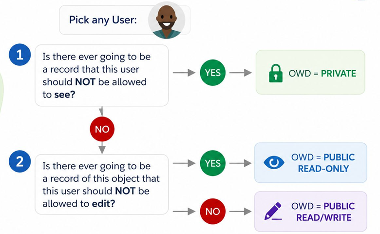
Users generally need ownership or another sharing mechanism for access.
Users can read broadly but editing remains constrained.
A more open baseline for the object.
Each object can have its own default access model.
Identify the OWD for the exact object.
Do not infer Account OWD from Case OWD or vice versa.
Only after the baseline is known should you evaluate mechanisms that open access.
A marketing user cannot see a Sales-owned Account. If Account OWD is Private and the users are in different hierarchy branches, additional sharing may be required.
Role Hierarchy can open record access vertically through the data-visibility structure, allowing users higher in the hierarchy to inherit access to records owned below them where the object supports that behavior.
A Role is not simply the user job title or manager field. The hierarchy represents how record visibility can roll upward from record owners.
Where the record owner sits in the hierarchy.
Where the user requesting access sits.
Higher roles can inherit access where hierarchy applies.
Role Hierarchy and Manager Groups are different mechanisms.
The hierarchy is about record visibility, not job-title reporting alone. Users higher in the structure can inherit access to records owned by users below them where hierarchy-based access applies.
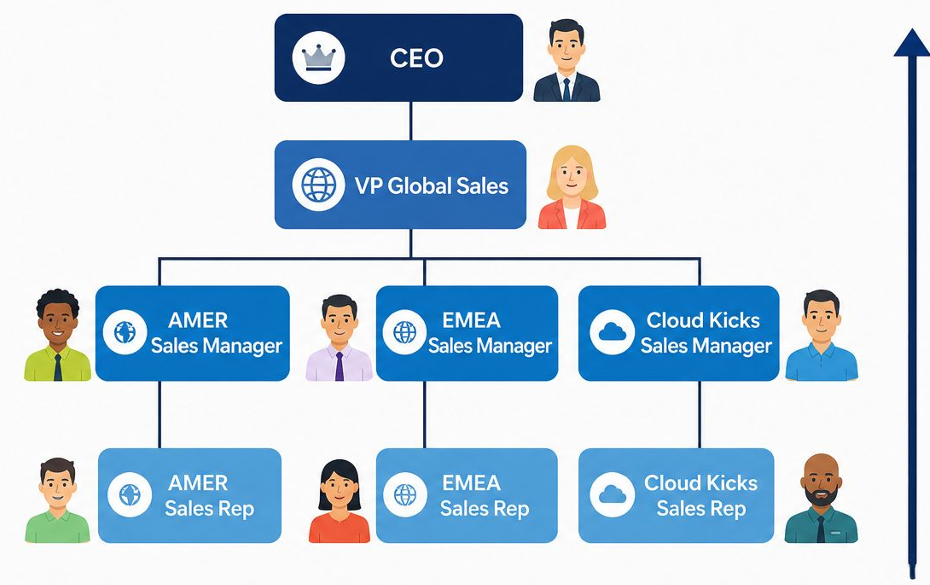
Where the record owner sits in the hierarchy.
Where the user requesting access sits.
Higher roles can inherit access where hierarchy applies.
Role Hierarchy and Manager Groups are different mechanisms.
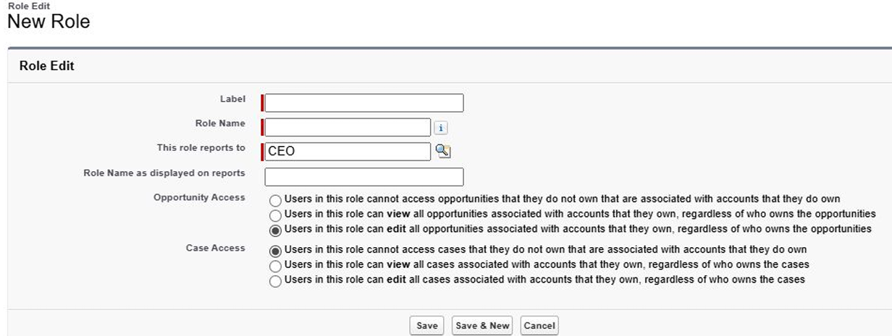
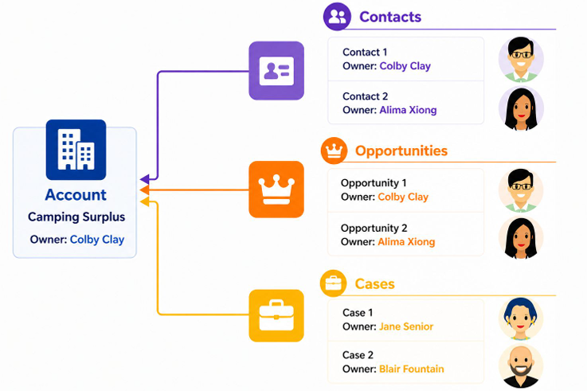
Find the record owner and the owner role.
Find the affected user and their role.
Verify that hierarchy access applies to the object and that the user is actually above the owner.
A regional manager can see records owned by sales reps below them, while a peer manager in a different branch cannot. The role structure explains the difference without needing a Sharing Rule.
Open Salesforce Help to review hierarchy-based record access and ownership behavior.
Sharing Rules automatically open additional record access to defined users, roles, territories, or groups when the baseline and hierarchy do not provide enough visibility.
Rules can be based on ownership or record criteria. They are designed to grant additional access; they do not generally make access more restrictive than OWD.
Shares records based on who owns them.
Shares records based on field values/criteria.
Users, roles, territories, or Public Groups receive access.
The rule defines the level of shared access.
Shares records based on who owns them.
Shares records based on field values/criteria.
Users, roles, territories, or Public Groups receive access.
The rule defines the level of shared access.
Sharing Rules grant additional access from the baseline.
Confirm the record actually meets the rule criteria or ownership condition.
Confirm the intended target group/role is correct.
Check the access level granted by the rule.
Verify group membership if a Public Group is involved.
Account OWD is Private and marketing needs consistent visibility into Sales-owned Accounts. A Sharing Rule can open that access across hierarchy branches.
Open Salesforce Help to review source records, target audiences, and access levels for automatic sharing.
Public Groups simplify access management by grouping users, roles, and other members so the group can be referenced by Sharing Rules and other Salesforce features.
The group becomes useful when another feature references it. Public Groups can participate in sharing, folders, reports/dashboards, queues, and approval-related configuration.
Users, roles, or supported group members.
A Sharing Rule can grant access to the group.
The same group can be referenced by multiple features.
Membership by itself does not automatically share every record.
A Public Group can contain individual users, roles, roles and subordinates, or even other public groups. Another sharing feature still has to reference the group before record access is granted.
Add specific users when the audience does not map cleanly to a role structure.
Include everyone assigned to a selected role in the organization.
Include a role plus the users below it in the hierarchy when that grouping fits the access model.
Nest supported groups to build a reusable audience without repeating members.
Users, roles, or supported group members.
A Sharing Rule can grant access to the group.
The same group can be referenced by multiple features.
Membership by itself does not automatically share every record.
Inspect the group membership before changing the Sharing Rule.
Confirm the expected user is included through the group membership path.
Confirm the feature actually references the intended group.
A Sharing Rule looks correct but one user still cannot see the records. Before rewriting the rule, confirm whether that user is actually a member of the targeted Public Group.
Account, Opportunity, and Case Teams provide record-oriented collaboration by giving selected users access and defined roles on specific business records.
Teams can explain access that does not come from the OWD, hierarchy, or broad Sharing Rules. They are useful when collaboration needs to be explicit on individual records.
Collaborators on a specific Account.
Collaborators on a specific Opportunity.
Collaborators on a specific Case.
The access is tied to the business record and team membership.
Collaborators on a specific Account.
Collaborators on a specific Opportunity.
Collaborators on a specific Case.
The access is tied to the business record and team membership.
Check whether the user is a team member.
Review the access level associated with the team role/configuration.
Use the team relationship to explain one-off collaboration access.
A user can access one Account but not other Accounts owned by the same team. Check whether the user was added to that specific Account Team.
Manual Sharing grants one-off access to a specific record without changing the overall organization sharing model.
Manual Sharing is designed for exceptional record-specific access. It can disappear when record ownership changes or when the owning user is deactivated.
The share applies to one record.
Access can be granted to selected users or supported groups/roles.
Useful when broad Sharing Rules are not appropriate.
Owner changes can remove manual shares.
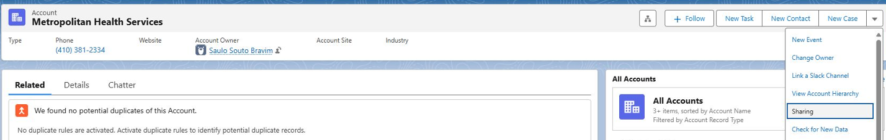
The share applies to one record.
Access can be granted to selected users or supported groups/roles.
Useful when broad Sharing Rules are not appropriate.
Owner changes can remove manual shares.
Confirm whether a manual share exists on the record.
Check whether ownership changed recently.
Do not redesign OWD just because one old manual share disappeared.
A user could see an Account yesterday but lost access immediately after the owner changed. Inspect Manual Sharing history before changing OWD or adding a broad Sharing Rule.
Manager Groups use manager relationships on User records rather than only the formal Role Hierarchy, allowing supported sharing patterns to follow who manages whom.
Manager Groups are less common than Role Hierarchy or Sharing Rules, but they can explain access that follows the User Manager field instead of the hierarchy structure.
The User relationship identifying a manager.
A sharing target based on management relationships.
Manager relationship and role position can diverge.
Explains access that follows manager chains rather than role branches.
Do not assume the User Manager field and the Salesforce Role Hierarchy match. Investigate which relationship the access mechanism actually uses.
Key benefit: access can follow the actual manager relationship stored on the User record.
Key point: hierarchy access follows role placement, not the User Manager field.
The User relationship identifying a manager.
A sharing target based on management relationships.
Manager relationship and role position can diverge.
Explains access that follows manager chains rather than role branches.
Check whether Manager Groups are enabled/used.
Inspect the User manager relationships.
Do not assume the Role Hierarchy should match the Manager field.
Access follows a person’s manager even though that manager is not above them in the Salesforce Role Hierarchy. Manager Groups can explain the pattern.
Restriction Rules reduce the records visible to selected users after normal sharing access has been calculated. They refine an already-open sharing model for supported objects.
Navigate to Setup → Object Manager → select the object → Restriction Rules. From there, create or review the rule that filters records for the targeted users.
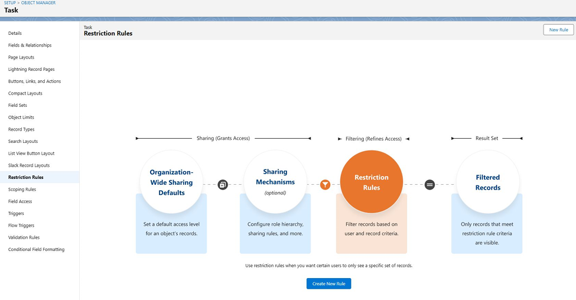
Normal sharing is calculated first.
Filters the visible record set for targeted users.
Restriction Rules apply only where supported.
Explains why a user appears entitled to access but still cannot see the record.
First prove that normal sharing should grant access.
Then check whether the user matches a Restriction Rule.
Confirm whether the missing record fails the rule criteria.
A user has object Read, correct OWD/hierarchy access, and a matching Sharing Rule, but one record is still missing. Check Restriction Rules before assuming the sharing engine failed.
Login Hours and Login IP Ranges can prevent users from entering the org under their Profile restrictions. These controls operate before object, field, and record visibility become relevant.
If the user cannot enter Salesforce, troubleshoot authentication, allowed hours, IP restrictions, and identity verification before spending time on OWD or Sharing Rules.
Restrict access to configured time windows.
Restrict access based on allowed network ranges.
These controls can be configured on Profiles.
Record sharing is irrelevant if the user cannot log in.
Restrict access to configured time windows.
Restrict access based on allowed network ranges.
These controls can be configured on Profiles.
Record sharing is irrelevant if the user cannot log in.
Confirm the exact login error and time.
Check Profile login hours.
Check the client IP against allowed ranges.
Separate authentication/identity problems from post-login authorization problems.
A user can log in from the office during the day but is denied from home at night. That symptom belongs at the login-hours/IP layer, not the record-sharing layer.
Open the Salesforce Developer resource to reinforce how allowed IP ranges affect whether a user can enter the org.
Administrative users can receive powerful permissions such as View All Data and Modify All Data. These permissions can bypass normal record restrictions and make admin-versus-user comparisons misleading.
The label “System Administrator” is not itself the technical mechanism. The user’s effective permissions determine the broad visibility or modification capability.
Can provide broad record visibility across the org.
Adds broad create/edit/delete/transfer capabilities.
The assigned permissions create the access.
An admin may bypass the restriction affecting the standard user.
Can provide broad record visibility across the org.
Adds broad create/edit/delete/transfer capabilities.
The assigned permissions create the access.
An admin may bypass the restriction affecting the standard user.
Inspect the effective permissions of the comparison user.
Do not use an admin as proof that a standard user should have the same visibility.
Look for View All Data, Modify All Data, or other elevated access that changes the result.
An administrator can see the record and edit every field, but the customer user cannot. First determine whether the admin has elevated permissions before concluding that Salesforce security is inconsistent.
25 questions covering the complete module: baseline permissions, field and object access, ownership, OWD, role hierarchy, sharing mechanisms, restrictions, login controls, elevated permissions, and the bottom-up troubleshooting model.
Understand what can happen behind a Salesforce transaction and isolate whether Flow, validation, Apex, or another execution layer produced the observed behavior.
A single record save can involve multiple automation and validation layers. Order of Execution gives you a mental model for locating the layer that changed, blocked, or extended the transaction.
A record is created or updated and the transaction begins.
Before-save FlowSalesforce Flow is declarative automation built from connected visual elements. Click to open the glossary. can update the record, while other transaction logic can also participate.
Apex TriggerAn Apex trigger is custom code that runs in response to record events. Click to open the glossary., Validation RulesA validation rule blocks a save when its formula evaluates to TRUE. Click to open the glossary., duplicate logic, and other automation can influence the result.
Automation can create related records, update other data, send notifications, or call additional processes.
Asynchronous activity can continue even after the visible save appears complete.
Use the timing and symptom to narrow the layer. An automatic field change does not prove that Flow was responsible.
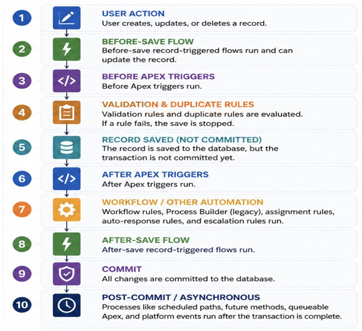
Look for logic that can modify the record before commit, including before-save automation.
Inspect validation, required data, duplicate handling, permissions, and other transaction logic.
Investigate after-save automation and downstream processes.
Consider post-commit or asynchronous processing and collect runtime evidence.
Identify the exact save, update, create, or delete operation.
Did the failure happen before save, during save, immediately after, or later?
Flow, trigger, validation, duplicate logic, and downstream automation can coexist.
Use runtime information instead of disabling random automation.
Do not label the behavior “a Flow issue” yet. First identify when the value changed, what automation is configured for that event, and which layer actually performed the update.
Salesforce Flow is the primary declarative automation platform for building business processes with connected visual elements instead of traditional code.
A Flow can make decisions and act on Salesforce data in response to a business event.
Find records or values needed by the process.
Choose the next path based on conditions.
Change existing Salesforce records.
Create records when the business process requires them.
Use screens when a user must provide information.
Send notifications or invoke other automation.
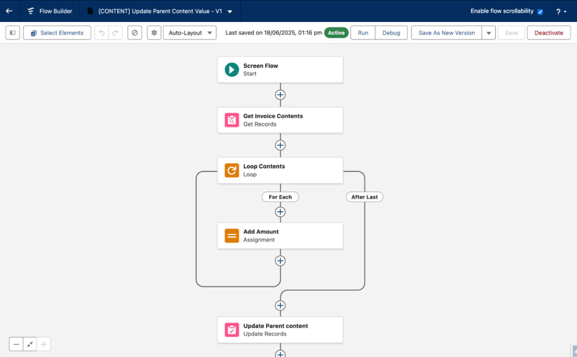
What event should start the Flow?
Which branch should the record or user follow?
Which action, decision, or data operation should run?
What record, field, notification, or user experience should result?
“When X happens, Y should happen, but Z happens instead.”
Identify what event or process owns that outcome.
Follow only the relevant branch.
The first mismatch is more useful than scanning everything.
That symptom suggests automation tied to a record change. The investigation should identify the event, confirm whether a record-triggered Flow is active, and then follow the path that should run for that Opportunity.
Flow types mainly differ by what starts them and whether they interact directly with a user. Identifying the type tells you where to begin the investigation.
Runs because a Salesforce record changes.
Runs at a defined time or schedule.
Runs interactively with a user.
Runs when another process calls it.
Runs in response to a platform event.
Coordinates longer processes involving multiple steps and participants.
The record change starts the automation.
No record edit is required at that moment.
The process requires direct user interaction.
Another process invokes it.
Verify the record-trigger conditions and whether the record met them.
Verify schedule, target records, and what should run at that time.
Verify input, navigation, decisions, and the user path.
Identify what called the autolaunched Flow and what inputs it passed.
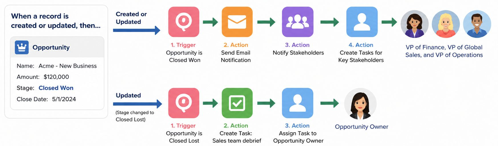
Platform Event Flows and Orchestrator were described as less common in this support path. Identify them correctly, then determine whether the issue is actually integration-specific or belongs to another support scope.
Flow Builder is the visual interface for reading and building automation. The Toolbox supplies building blocks, the Canvas shows the path, Elements do work, and Resources hold values.
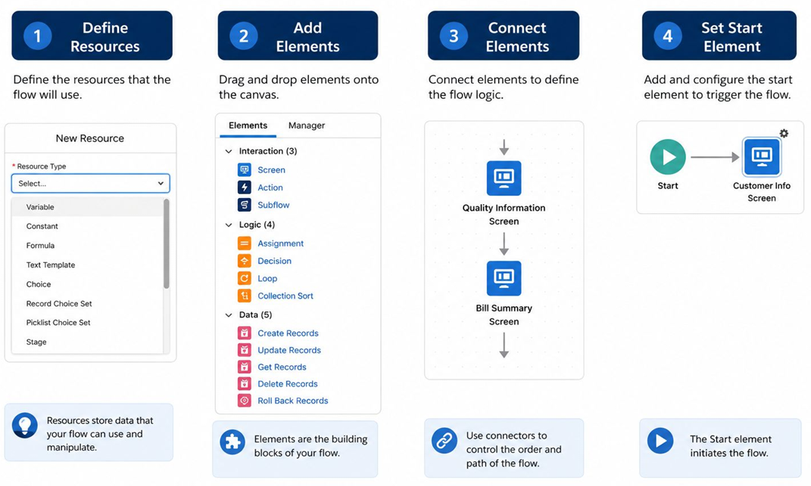
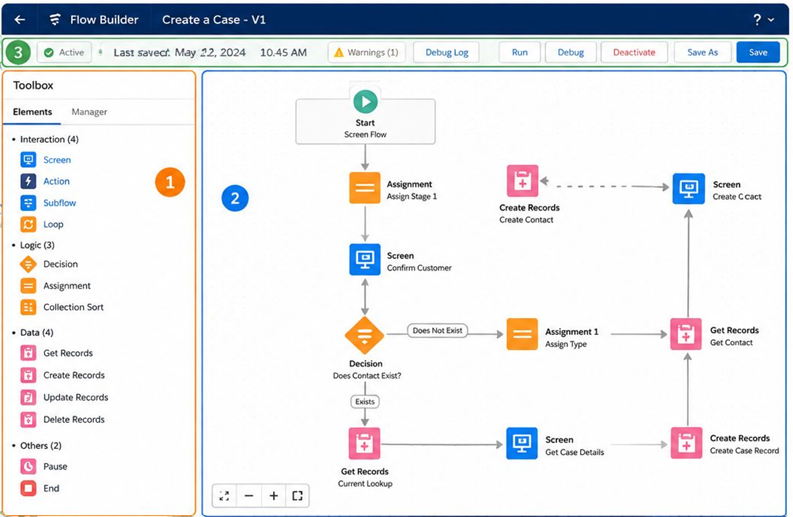
Contains the elements and resources to build the Flow.
Working area where elements are added and connected.
Shows active status, save information, warnings, errors, and debug options.
Confirm how the Flow starts and what input context exists.
Follow only the branch the customer should take.
Find the first element where expected and actual behavior differ.
Confirm the values and references used by that element.
Start at the trigger, follow the customer record to the Decision element, inspect the values used in the outcome conditions, and stop at the first point where the actual path differs.
Flow elements can be grouped by purpose: interaction, logic, and data. Classifying the failing element helps reduce a large Flow to the part that actually matters.
Screens and actions can display information, collect input, or call another process.
Decisions, assignments, loops, and collection filters shape the execution path.
Get, create, update, and delete operations change or retrieve data.
A fault path provides controlled handling when an element fails instead of leaving the error unexplained.
Check screen input, passed variables, and called-process inputs.
Inspect condition values and assignments.
Verify the target record, field values, and operation result.
Use it to understand what failed and how the Flow handled it.
The input phase succeeded, so move beyond Interaction. Check the logic that selects the record and the Data element that performs the update.
Subflows keep automation reusable, while Flow versions preserve prior configurations. Both are critical when behavior changes after a deployment or update.
Main business process
Reusable automation
Continue the larger process
Earlier configuration
Previously working version
ACTIVE
Current runtime behavior
Only the active version controls current execution. Earlier versions are useful comparison points.
A larger process can call shared automation rather than rebuilding the same logic.
Do not debug an inactive version and assume it explains the customer symptom.
When behavior changed after an update, compare the active version with the last known-good version.
Verify referenced subflows are active and completing as expected.
Identify exactly what Salesforce is running now.
Use the version that worked before the reported change.
Focus on elements, conditions, resources, or calls that changed.
Confirm every referenced subflow is active and completes successfully.
Confirm the active version, compare it with the last version that created tasks correctly, and inspect any changed branch or subflow call before changing production logic.
Flow debugging is structured path analysis: reproduce, identify the active Flow/version, follow the expected path, and inspect the point where behavior diverges.
Use the exact customer input and scenario.
Confirm the automation and active version that actually ran.
Trace the branch the record or user should take.
Inspect the first element where actual behavior changes.
Use debug and runtime evidence first.
What entered the Flow or element?
Which branch evaluated as true?
Which record was read, created, updated, or deleted?
Did the failing element route to a controlled error path?
Did the dependency run and finish correctly?
When needed, pair Flow analysis with Debug Logs and SOQLSalesforce Object Query Language, used to query Salesforce data. Click to open the glossary..
Reproduce with the same inputs, identify the active version, follow the successful Case creation path, then inspect the next decision or record operation. If the Flow evidence is not enough, use Debug Logs and SOQL to confirm runtime behavior and data.
Validation Rules protect data quality by blocking a save when a configured formula evaluates to TRUE. The fastest investigation connects the formula, record values, and the process attempting the save.
Salesforce displays the configured error message because the invalid condition was met.
The rule does not block the transaction, though other automation or validation may still apply.
A user editing a record can hit the rule.
A Flow record operation can fail when the target data violates the rule.
DMLData Manipulation Language operations such as insert, update, and delete change Salesforce records. Click to open the glossary. in custom code can be blocked by validation.
Bulk or import tools must satisfy the same validation conditions.
A useful Validation Rule error should tell the user what data needs to change, not only that the save failed.
Which Validation Rule evaluated during the save?
What condition makes the formula return TRUE?
Which record values satisfied that invalid-data condition?
Was the save initiated manually, by Flow, Apex, or an import?
Do not treat the Flow element as the root cause automatically. Identify the Validation Rule, evaluate its formula against the record values the Flow attempted to save, and determine why the invalid condition became TRUE.
Success Engineers do not need to build customer Apex to investigate it. They do need to recognize the runtime concepts that appear in logs, errors, queries, data operations, and limits.
You need enough Apex vocabulary to understand logs, runtime failures, data operations, and platform limits.
Custom classes and logic that run inside Salesforce transactions.
Code that runs around record create, update, delete, or undelete events.
Operations that change Salesforce data.
Queries Salesforce data used by the code.
A failure point and starting clue in the runtime path.
Shared-resource limits that Apex and transactions must respect.
SOQL retrieves data.
Apex evaluates the values and business rules.
The transaction tries to insert, update, or delete records.
A missing value, validation failure, or resource limit can stop execution.
Bulkified code reduces inefficient per-record processing and helps stay within Governor Limits.
A value the code expected was missing.
Which earlier query, automation, or input should have populated it?
The root cause may be earlier in the transaction than the exception location.
Use the exception and logs to identify the failing line, then trace backward. Check whether a SOQL query returned no record, whether an input was missing, or whether earlier automation failed to populate the value the trigger expected.
25 questions covering transaction timing, Flow, Flow types, Flow Builder, logic, versions, debugging, Validation Rules, and Apex investigation concepts.
Learn how customers analyze Salesforce data and how report configuration, security and bulk data tools affect troubleshooting.
Build a practical toolbox for gathering evidence across the UI, logs, data, internal systems and AI-assisted investigation.
Turn individual tools into a repeatable investigation method: scope, impact, reproduction, research, evidence, RCA, escalation and collaboration.
This will be the final section of the guide. It will be built later from real case material.
When we build this section, each case can follow a consistent path such as Issue → Context → Scope → Investigation → Evidence → Tools → Root Cause → Resolution → Communication → Takeaways.